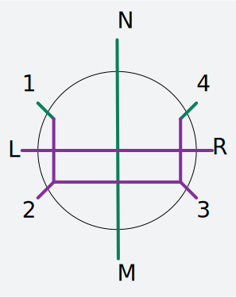

有些题可能会写得很简略，毕竟这不是什么正经的题解，不过基本思路都有。
翻译基本上是洛谷上贺的。
把这么多东西塞到一个页面里似乎不是一个很好的做法，所以展开的时候加载可能会有点慢。
完成进度: / 150
Atcoder 部分
AGC020D
多组询问。每个询问给定四个整数，$A, B, C, D$，求一个满足这个条件的字符串：
- 长度为 $A + B$，由 $A$ 个字符A和 $B$ 个字符 B 构成
- 在此基础上，连续的相同字符个数的最大值最小
- 在此基础上，字典序最小
输出这个字符串的第 $C$ 位到第 $D$ 位。
考虑构造出来的串一定是 $A \cdots ABA \cdots ABA \cdots | B \cdots BAB \cdots BA \cdots$
然后直接二分分界点即可。
code:
(define (solve a b c d)
(define k (quotient (+ a b) (+ 1 (min a b))))
(define (get_ab p)
(cons
(- a (* (quotient p (+ k 1)) k) (modulo p (+ k 1)))
(- b (quotient p (+ k 1)))))
(define sep
(let search ((l 0) (r (+ a b)))
(if (= l r) l
(let* ((mid (quotient (+ l r) 2))
(g_r (get_ab mid))
(pa (car g_r))
(pb (cdr g_r)))
(if (<= pb (* pa k))
(search (+ mid 1) r)
(search l mid))))))
(define pos
(let* ((g_r (get_ab sep))
(pa (car g_r))
(pb (cdr g_r)))
(+ 1 sep pb (- (* pa k)))))
(let loop ((i c))
(display
(if (<= i sep)
(if (= (modulo i (+ k 1)) 0) #\B #\A)
(if (= (modulo (- i pos) (+ k 1)) 0) #\A #\B)))
(when (< i d) (loop (+ i 1))))
(newline))
(let loop ((n (read)))
(when (> n 0)
(let* ((a (read))
(b (read))
(c (read))
(d (read)))
(solve a b c d) (loop (- n 1)))))
AGC020E
我们定义一个 01 串的压缩是满足如下方式的字符串变化过程：
- $0\to 0, 1\to 1$
- 如果 $A\to P, B\to Q$ 合法，那么 $A+B \to P+Q$ 也合法（其中 + 代表字符串拼接）
- 如果 $S = A^n (n \geq 2)$，那么 $S\to (A\times n)$ 也合法（其中 (, ), $\times$ 为字符，$n$ 为数字，算作一个字符，即使其中有 0/1）
现在给你一个 01 串 S，问它所有的 子集 的合法变化结果数的总和为多少。
答案对 $998244353$ 取模。
先考虑一个固定的 01 串压缩方案数是多少。显然有一个 $O(n^3)$ 的区间 dp
然后考虑所有子集的和。此时要取若干个区间的交，而这个交不一定是一个子串，所以要改成 std::map 记忆化搜索。
复杂度毛估估能过
AGC020F
你有一个长度为 $C$ 的圆，你在上面画了 $N$ 个弧。弧 $i$ 有长度 $l_i$
每一条弧 $i$ 随机均匀地放置在圆上：选择圆上的一个随机实点，然后出现一条以该点为中心的长度为l $l_i$ 的弧。弧是独立放置的。例如，它们可以相互交叉或包含。
现在问你圆的每一个实点被至少一个弧覆盖的概率是多少？注意一条弧覆盖了它的两个端点。
经典套路。
首先从最长的弧的一个断环为链，转化为链上问题。
然后发现所有弧长都为整数，此时有一个很常见的套路就是 $O(N!)$ 枚举这些弧左端点 小数部分 的偏序关系。
然后就转化为了整点上的问题，直接状压 dp 即可，复杂度 $O(n! 2^n \operatorname{poly}(n))$
AGC021E
有 $n$ 只变色龙，一开始都是蓝色。现在你喂了 $k$ 次球，每次指定一只变色龙吃下你指定颜色的球。
一只变色龙从蓝色变成红色当且仅当它吃的红球比蓝球多， 一只变色龙从红色变成蓝色当且仅当它吃的蓝球比红球多。
求最后能使所有变色龙都变成红色的方案数。
两个方案不同当且仅当至少一次喂的球颜色不同（而不是喂的变色龙不同）。
注意：存在一次喂的变色龙不同的两个方案可能是相同的方案。
考虑枚举最终序列中红球的个数，设红球有 $r$ 个，蓝球有 $b$ 个。
- 如果 $r < b$，显然一定不可行。
- 如果 $r - b \geq n$，那么对于每一条变色龙，我们一定可以让分给它的红球比蓝球多，所以任意方案都合法。
- 剩下的情况，发现一定存在一种最优方案满足：$r-b$ 条龙分到的红球比蓝球恰好多 1，剩下的龙都分到两个球，先红后蓝。结论不难证明，如果一条龙分到的红球颜色比蓝球多 2，那么可以把多出来的红球分给一个相等的。如果一个分到两种颜色数量相等的龙分到了大于等于 4 个球，就一定能拿出若干对红蓝求分给红球比蓝球多的龙。这样我们说明了任意方案都可以调整到这种局面， 也就证明了这个结论。这样的序列数量可以直接通过组合数求出，类似卡特兰数的求法。
code：
(define mod 998244353)
(define max-n 500005)
(define fac
(let loop ((result (make-vector max-n 1)) (i 1))
(cond
((>= i max-n) result)
(#t (vector-set! result i (modulo (* i (vector-ref result (- i 1))) mod))
(loop result (+ i 1))))))
(define inv
(let loop ((result (make-vector max-n 1)) (i 2))
(cond
((>= i max-n) result)
(#t (vector-set! result i (modulo (* (- mod (quotient mod i))
(vector-ref result (modulo mod i))) mod))
(loop result (+ i 1))))))
(define ifac
(let loop ((result (make-vector max-n 1)) (i 1))
(cond
((>= i max-n) result)
(#t (vector-set! result i (modulo (* (vector-ref result (- i 1))
(vector-ref inv i)) mod))
(loop result (+ i 1))))))
(define (ncr n r)
(cond
((> r n) 0)
((< r 0) 0)
(#t (modulo (* (vector-ref fac n) (vector-ref ifac r) (vector-ref ifac (- n r))) mod))))
(define n (read))
(define k (read))
(define (solve r b)
(cond
((< r b) 0)
((< r n) 0)
((>= (- r b) n) (ncr k r))
(#t
(when (= r b) (set! b (- b 1)))
(- (ncr (+ r b) r) (ncr (+ r b) (+ r r (- n) 1))))))
(let loop ((ans 0) (i 0))
(cond
((> i k) (write (modulo ans mod)) (newline))
(#t (loop (+ ans (solve i (- k i))) (+ i 1)))))
AGC021F
现有一个 N 行 M 列的、仅包含黑白格的表格，左上为 (1,1)(1, 1)(1,1)，右下为 (N,M)(N, M)(N,M)。
对于一个表格，设长度为 N 的数列 A，长度为 M 的数列 B、C 分别表示：
- $A_i$ 表示第 i 行第一个黑格的列号。若不存在则为 $M + 1$
- $B_i$ 表示第 i 列第一个黑格的行号。若不存在则为 $N + 1$
- $C_i$ 表示第 i 列最后一个黑格的行号。若不存在则为 0
现请你求出所有的 $2^{NM}$ 种表格中，不同的数列三元组 $(A,B,C)$ 的个数对 998244353 取模的结果。
$1 \leq N \leq 8 \times 10^3, 1 \leq M \leq 200$
令 $f(i,j)$ 表示强制 每行 都有黑格子的 $i$ 行 $j$ 列矩阵的方案数，显然答案是 $\sum_{i=1}^n \binom ni f(i,m)$
然后列出转移：
然后右半边 fft 优化即可
时间复杂度 $O(nm \log n)$
AGC022D
有 $n$ 个商场, 第 $i$ 个商场在数轴上的 $x_i$ 处, 你需要在第 $i$ 个商场花费连续的 $t_i$ 单位时间购物
现在有一趟火车会在 0 到 L 处往返, 行驶一单位距离要花费一单位时间.
你从 0 时刻起在 0 处上车, 只有在商场, 0 处或 L 处才能下车, 问最少花费多少单位时间能在每一个商场都购完物后回到 0 处.
$n \leq 3 \times 10^5, 0 < x, L \leq 10^9$
先把所有的 $t_i$ 对 $2L$ 取模，把商加到答案里，显然答案不变。
对于取模以后为 0 的，直接删掉。
考虑剩下的部分，答案的上界是 $N+1$，直接从小到大访问即可。
对于每一轮（即时长为 $2L$ 的一段），最多只能访问两家商店。因此我们缩小答案的方法只有将商店两两配对。
对于每个商店，定义 $l_i = [2(L - x_i) \geq t_i], r_i = [2x_i \geq t_i]$
对于一组 $i < j, r_i = 1, l_i = 1$，我们可以将其配对，将答案减小一轮。
$i < j, l_i = 0, r_j = 1$ 这样的点对不可能存在。
直接贪心匹配即可。
AGC022E
有个奇数长度的 01 串 s 其中有若干位置是 ?
每次可将 3 个连续的字符替换成这三个数的中位数
求有多少方案将 ? 替换成 0/1 使得能对其进行若干次操作后得到一个 1
先考虑怎么判断。
“把若干个连续的数替换为新的数”这类题目的一个常见套路是维护一个栈，依次把数加入。
这道题中，我们的策略是先删 000， 然后把相邻的 01 删除（因为 01? 的中位数为 ?，所以相邻的 01 可以直接视为不存在）。
转换为栈的操作。我们维护一个栈顶到栈底为先一段 0 后一段 1 的栈。新加元素后，如果栈顶出现 000，那么替换为 0，如果出现 10，那么这个 1 与 0 抵消是一种不劣的做法，因此将其消去。这样也就保证了先 0 后 1 的性质。最后只要 1 的个数多余 0，就是合法的解。
然后要统计个数。常见的套路是 dp 套 dp。上述做法中，栈中 1 的个数可能会很大，但我们发现，由于 0 的个数最多为 2，如果 1 的个数大于 2，多出来的 1 并没有用，所以直接忽略即可。这样栈中最多 2 个 1, 2 个 0, 一共 9 种状态，dp 套 dp 转移即可。
AGC022F
令 $x=10^{100}$, 数轴上有 $n$ 个点, 第 $i$ 个点的坐标为 $x^i$
进行 $n-1$ 次操作, 每次操作选择两点 $A$ 和 $B$, 将 $A$ 移动到 $A$ 关于 $B$ 的对称的位置并删去 $B$
求最后剩下的一个数有多少种可能的取值.
$n \leq 50$
考虑每次操作把 $B$ 向 $A$ 连边，形成一棵儿子有顺序的树。
对于点 $u$，它的贡献为 $2^{d(u)} s(u) x^u$，其中 $d(u)$ 是 u 的深度， $s(u)$ 是 -1 或 1
然后由于 $x$ 非常大，我们可以认为只要两个系数序列不同，最终的位置也不同。
$d(u),s(u)$ 的值都通过树的形态确定，dp 即可。（好吧我还不是很会，不过大致思路就是这样）
AGC023D
一条街上有 $n$ 栋楼，位置从小到大分别在 $x_1, x_2, \cdots , x_n$
在位置 $s$ 有一座公司，员工下班时乘坐公司的员工班车回家。
这些员工住在 $n$ 栋楼内，具体地说，第 $i$ 栋楼内住着 $P_i$ 个员工。
班车是自动驾驶的，每一个时刻，还在车内的每个员工都会进行投票，只能投正方向或者负方向，不能弃权。
班车会自动统计两个方向的票数，并且往票多的方向行驶一个单位长度，如果票一样多，那就往负方向行驶。
员工们也有投票策略，每一个员工都会投能让他回家时间尽量早的方向，如果两个方向一样早，那就投负方向。
如果班车到达了某一个楼，那么住在那栋楼中的所有员工都会下车。
可以证明，在上述条件下，每个员工投票的方向是能够唯一确定的，班车的运行路线也能够唯一确定。
最终询问最后一名员工回到家，经过了多少个单位时间。
$1 \le n \le 10^5$
反过来考虑。假设现在的区间是 $[l,r]$
- 如果 $s \not \in [l,r]$ ，那么显然只会向一个方向。
- 否则，当 $p_l \geq p_r$ 时，不难证明最后到达的是 $r$，否则是 $l$。假设最后到达的是 $r$，那么在此之前 $r$ 的所有决策都会 $l$ 一致，那么可以让他们暂时归为 $l$。然后递归处理即可。
code（代码里用了 sort ，建议用 Gauche 执行）:
(define n (read))
(define s (read))
(define p
(let loop ((p '()) (i 0))
(if (= i n)
(sort (list->vector p) (lambda (a b) (< (car a) (car b))))
(loop (cons (cons (read) (read)) p) (+ i 1)))))
(define (pos index) (car (vector-ref p index)))
(define (pop index) (cdr (vector-ref p index)))
(define (set-pop index value) (set-cdr! (vector-ref p index) value))
(write
(let solve ((ans 0) (l 0) (r (- n 1))
(goal (if (< (pop 0) (pop (- n 1))) 0 (- n 1))))
(cond
((< s (pos l)) (+ ans (- (pos r) s)))
((< (pos r) s) (+ ans (- s (pos l))))
((>= (pop l) (pop r))
(set-pop l (+ (pop l) (pop r)))
(solve (+ ans (if (= goal r) (- (pos r) (pos l)) 0)) l (- r 1) l))
(#t
(set-pop r (+ (pop l) (pop r)))
(solve (+ ans (if (= goal l) (- (pos r) (pos l)) 0)) (+ l 1) r r)))))AGC023E
给定一个长度为 $n$ 的序列 $a$，问所有满足$\forall i,P_i\le A_i$ 的 $1\sim n$ 的排列的逆序数的和为多少
答案对 $10^9+7$ 取模。
令 $b_i$ 为 $a_i$ 的排名，$c_i$ 为 $a_i$ 排序过后的结果。
总方案数 $f(n) = \prod_{i=1}^{n} (a_i - b_i + 1) = \prod_{i=1}^{n} (c_i - i + 1)$
考虑插入位置 $i$ 时它前面的一个位置 $j$ 和它产生逆序对的方案数。
假设 $a_i \geq a_j$，若令 $a_i \leftarrow a_j$，则此时的所有方案中满足逆序的数量为总数的一半。对于 $a_i < a_j$ 的情况，用总方案数减去顺序的即可。
所以 $i,j$ 的贡献
然后考虑把 $f(i,j)$ 分为和 $i,j$ 分别有关的两部分，有：
左半边与 $i$ 有关，右半边可以用线段树维护。
具体的，按从小到大的顺序依次插入，假设当前插入的是第 $k$ 个，那么全局乘上 $\frac{c_k - k}{c_k - k + 1}$，然后再把位置 $k$ 赋为 $(a_k - b_k)$ 即可。
AGC023F
给出一棵 $n$ 个节点的树，以及一个空序列。
每个节点上有一个取值在 ${0, 1}$ 中的数。
每次你可以选择没有父亲节点的点删除，并且将这个节点上的数字放在当前数列末尾。
请你求出这个数列可能得到的最小逆序对数。
$n \leq 2 \times 10 ^5$
经典套路，根据一个顺序丢进 set 里每次去最小的和父亲合并。
考虑这题中关键字是什么。
假设是有两段 01 序列，0 和 1 的个数分别是 $a0, a1, b0, b1$
那么合起来的新增逆序对数量是 $a1 \times b0$ 或 $b1 \times a0$
不难看出按照子树中 1 的个数和 0 的个数的比值为关键字排序即可。
AGC024D
给定一棵点数为 $n$ 的无根树. 对于两个点 $u,v$ , 若有以 $u$ 为根与以 $v$ 为根树同构, 则染上同一种颜色。
可以给这棵树加若干点, 问加完点后树最少能有多少种颜色, 以及在最少颜色的情况下最少有多少个叶子节点。
首先颜色数为直径长度 / 2 + 1
然后找出直径中点（某个点或某条边）作为根，那么每个点所有的儿子同构。记录下每个深度点度的最大值相乘就是叶子数。
AGC024E
给定 $n$, $k$, $m$ , 问有多少个序列组 $(A_0,A_1,…,A_n)$ 满足：
- 序列 $A_i$ 的元素个数为 $i$
- 所有元素都在 $[1,k]$ 内
- $\forall i\in[0,n)$, $A_i$ 是 $A_{i+1}$ 的子序列且 $A_i$ 的字典序小于 $A_{i+1}$。
结果对 $m$ 取模。
$n,k \leq 300$
思路比较清奇的 dp 题。
序列组等价于按某个顺序删元素，满足字典序递减。
由于序列中可能有相同的一段，钦定删除的一定是某一段的最后一个，这样一个数能被删除的条件是后面的数比它小，或者它在末尾。
然后倒过来 dp。令 $\operatorname{dp}(i,j)$ 表示长度为 $i$，使用 $j$ 种数的方案数。考虑转移，枚举序列中 1 第一次出现的位置 $k$ 和被删除的时间 $p$，那么就有如下转移：
于是就有了一个 $O(n^4)$ 的 dp。前缀和优化即可做到 $O(n^3)$。
AGC024F
有一个 01 串集合 $S$，其中每个串的长度都不超过 $n$，你要求出至少是 $s$ 中 $k$ 个串的子序列的最长串，如果有多解，输出字典序最小的那组解。
$n \leq 20$。
注意输入方式。
发现 $n$ 并不大，可以直接枚举 $2^n$ 种串。
可以把所有串的子序列自动机建出来，然后合并为一个自动机。具体的，将所有的自动机最右边的点对齐，然后叠合到一起。
然后直接枚举答案暴力转移即可。看上去复杂度是 $O(2^nn^2)$ 的，但冷静分析一下会发现它其实只有 $O(2^nn)$。
AGC025D
给定 $n, D_1, D_2$，要求构造一个在 $2n\times 2n$ 的网格中选出 $n^2$ 个点的方案, 使得任意两点间的距离不为 $\sqrt{D_1}$ 或 $\sqrt{D_2}$。
$n\leq 300$。
将距离为 $\sqrt{D_1}$ 和 $\sqrt{D_2}$ 的点分别连成两张图，这两张图都是二分图，那么分别黑白染色后根据鸽巢原理一定能选出答案。
证明一定是二分图，考虑直接构造黑白染色。对 $d \bmod 4$ 分类讨论。
- $d \bmod 4 = 0$ 此时有连边的两个点 $dx,dy$ 为两个偶数，将 $d \leftarrow \frac d4$ 递归处理。
- $d \bmod 4 = 1$ 此时有连边的两个点 $dx,dy$ 为一奇一偶，按照 $x+y$ 的奇偶性黑白染色。
- $d \bmod 4 = 2$ 此时有连边的两个点 $dx,dy$ 为两个奇数，按照 $x$ 的奇偶性黑白染色。
- $d \bmod 4 = 3$ 此时不存在连边。
AGC025E
给定一棵 $n$ 个节点的树和 $m$ 条树上的路径, 要求为每一条路径定向.
一条边被正向经过会产生 1 的贡献，反向经过产生 1 的贡献。（一条边贡献最多为 2）
求最大贡献和并给出 $m$ 条路经的定向方案, 多组方案合法输出任意一组即可.
考虑删叶子的套路。
对于一条连接叶子的边，分讨经过它的路径数量：
- 0 条：直接删去即可。
- 1 条：无论如何都是 1 的贡献，直接删去即可。
- $\geq 2$ 条：设两条路径为 $u \to l \to v_0$ 和 $u \to l \to v_1$（两条路径在 $l$ 处分叉），那么可以删除这两条路径，新增一条 $v_0 \to v_1$ 的路径。原先的两条路径根据新增的路径决定方向，$u \to l$ 路径上所有边的贡献直接钦定为 2。
显然这样能达到上界，方案也不难构造。
AGC025F 暂时鸽了。
AGC026D
给定一个网格图，共有 $n$ 列，第 $i$ 列的高度为 $a_i$（底部对齐）。
求有多少个黑白染色方案，满足每个 $2 \times 2$ 的子矩形里都有两个黑色两个白色。
$n \leq 100$，但是实际上可以 $O(n)$。
考虑从左到右 dp。每列如果是黑白交错，那么下一列（的这一部分）可以是不变或者翻转。如果不是，那么必须翻转。
AGC026E
有一个长度为 $2n$ 的仅由字符 ab 构成的字符串，且 a 的个数恰好等于 b 的个数，都出现了 $n$ 次。
你需要保留一些字符，剩下的字符删掉。对于一个 $i$，你可以保留从左往右数的第 $i$ 个 a 和第 $i$ 个 b。
注意，对于这两个字符，只能同时保留或同时删掉，不能只保留其中一个。
请你求出能得到的字典序最大的串。
$1 \le n \le 3 \times {10}^3$。
首先把 a 视为 $+1$，b 视为 $-1$，得到一条折线。 折线与 $x$ 轴的交点将折线分成了若干段，段与段之间的修改互不影响。 我们求出每段的局部最优解，再合并为全局最优解。这样做的正确性依赖于局部最优解的性质，会在后文中证明。
先考虑如何求出局部最优解。对这条折线是在 $x$ 轴上方还是下方分讨。
- 在 $x$ 轴上方，即这一段的第一个字符为 a。
由于前缀和始终大于 0，所以第 $i$ 个 a 一定在第 $i$ 个 b 前面。因此局部最优解只能是 $\texttt{abab}\cdots$ 的形式，并且越长越好。
可以直接贪心求出。 - 在 $x$ 轴下方，即这一段的第一个字符为 b。
同样的，所有的 b 都在匹配的 a 前面。
此时首先要最大化开头一段 b 的长度。这相当于找到一个前缀，把所有的 a 以及和它匹配的 b 一起删掉。
然后考虑剩下的部分，发现直接保留就是最优的。
然后发现这两种局部解都是要么全部保留要么不保留，直接拿个单调栈搞搞就好了。
AGC026F
There are $N$ boxes arranged in a row from left to right. The $i$-th box from the left contains $a_i$ manju (buns stuffed with bean paste). Sugim and Sigma play a game using these boxes. They alternately perform the following operation. Sugim goes first, and the game ends when a total of $N$ operations are performed.
- Choose a box that still does not contain a piece and is adjacent to the box chosen in the other player's last operation, then put a piece in that box. If there are multiple such boxes, any of them can be chosen.
- If there is no box that satisfies the condition above, or this is Sugim 's first operation, choose any one box that still does not contain a piece, then put a piece in that box.
At the end of the game, each player can have the manju in the boxes in which he put his pieces. They love manju, and each of them is wise enough to perform the optimal moves in order to have the maximum number of manju at the end of the game.
Find the number of manju that each player will have at the end of the game.
先黑白染色（最左侧的是黑的），令黑格上数的和为 $B$，白格上和为 $W$。
如果 $n$ 是偶数，不难发现先手必有取到 $\max(B,W)$ 的策略，后手必有取到 $\min(B,W)$ 的策略，因此答案就是 $\max(B,W)$ 和 $\min(B,W)$。
如果 $n$ 是奇数，则情况略为复杂。
首先先手还是能取到 $\max(W,B)$，但此时可能更多。
发现如果先手开始取黑格，那么就会一直取黑格。即先手取白格一段时间后，当前局面剩下了一段区间，且这段区间的首尾都是黑格。此时先手最优的策略是取一段的黑格，把所有黑格取完。
也就是说先手只会在某个子区间里取黑格，其他地方取白格。
考虑策略形成了一颗二叉树。具体的，根结点代表第一次选择的白格，然后每个结点的左右儿子分别代表后手取右/左时下一次决策选的白格。如果下一次决策不选白格，则没有对应的儿子
然后把这棵树上的结点从左到右取出。这些位置把原序列分成了若干段，每一段都有可能成为最后选黑格的那一段。
所以可以二分先手是否能在全取白格的基础上多获得 $T$，也就是能否取的 $W + T$ 的权值。此时我们要求每一段的黑格减白格都大于等于 $T$，这可以通过简单的 dp 来判断。
时间复杂度 $O(n \log V)$
(define n (read))
(define a (let loop ((i 0) (a '()))
(if (= i n) (list->vector a)
(loop (+ i 1) (cons (read) a)))))
(define (calc-sum index step)
(let loop ((i index) (sum 0))
(if (>= i n) sum
(loop (+ i step) (+ sum (vector-ref a i))))))
(define (solve-even)
(max (calc-sum 1 2) (calc-sum 0 2)))
(define (check thr)
(let loop ((i 1) (sum (vector-ref a 0)))
(if (= i n)
(>= sum thr)
(if (< sum thr)
(loop (+ i 2) (+ sum (- 0 (vector-ref a i)) (vector-ref a (+ i 1))))
(loop (+ i 2) (+ (max 0 (- sum (vector-ref a i))) (vector-ref a (+ i 1))))))))
(define (solve-odd)
(+ (calc-sum 1 2)
(let binary-search ((l 0) (r 1000000000))
; (display (list 'l l 'r r)) (newline)
(if (= l r) l
(let ((mid (quotient (+ l r 1) 2)))
(if (check mid) (binary-search mid r) (binary-search l (- mid 1))))))))
(define first-ans (if (= (modulo n 2) 0) (solve-even) (solve-odd)))
(define second-ans (- (calc-sum 0 1) first-ans))
(display first-ans) (display #\ ) (display second-ans) (newline)
AGC027D
构造一个 $N * N$ 的矩阵. 要求:
- 所有元素互不相同.
- 满足 $a_{i,j}\leq 10^{15}$.
- 对于任意两个相邻的数字 ，$\max(x,y)\bmod \min(x,y)$ 都相等，且均为正整数。
可以证明方案一定存在。
先黑白染色，一种思路是在所有的黑格上填入互补相同的质数，对于每个白格，令其权值为四周的数的 lcm + 1。
这样每个数的大小可能会达到 $O(n^8)$ 级别，无法接受。
考虑找出两个不交的质数集 $p,q$，旋转 45 度以后，对于在第 $i$ 行第 $j$ 列的黑格，令其为 $p_i q_j$。此时不难发现每个格子依然不同，并且白格的值域上界是 $O(n^4)$。
顺便练一下 scheme 的惰性求值：
(define-syntax lazy-cons
(syntax-rules ()
((_ a b) (cons a (delay b)))))
(define lazy-car car)
(define (lazy-cdr ls)
(force (cdr ls)))
(define (head n ls)
(if (= n 0) '()
(cons (lazy-car ls) (head (- n 1) (lazy-cdr ls)))))
(define (lazy-ncdr n ls)
(if (= n 0) ls (lazy-ncdr (- n 1) (lazy-cdr ls))))
(define (is-prime x)
(let loop ((i 2))
(if (> (* i i) x) #t
(if (= (modulo x i) 0) #f
(loop (+ i 1))))))
(define primes
(let loop ((i 2))
(if (is-prime i)
(lazy-cons i (loop (+ i 1)))
(loop (+ i 1)))))
(define (gcd n m)
(if (= 0 m) n (gcd m (modulo n m))))
(define (lcm n m) (quotient (* n m) (gcd n m)))
(define (println fac ls)
(if (null? ls) (newline)
(let () (display (* fac (car ls))) (display #\ ) (println fac (cdr ls)))))
(define n (read))
(define pa (list->vector (head n primes)))
(define pb (list->vector (head n (lazy-ncdr n primes))))
(define (get x y)
(if (or (< x 0) (< y 0)) 1
(if (= 0 (modulo (+ x y) 2))
(* (vector-ref pa (quotient (+ x y) 2))
(vector-ref pb (quotient (+ (- n x 1) y) 2)))
(+ 1
(lcm (lcm (get (- x 1) y) (get (+ x 1) y))
(lcm (get x (- y 1)) (get x (+ y 1))))))))
(let loop ((i 0))
(if (< i n)
(let ()
(let loop ((j 0))
(if (= j n) (newline)
(let () (display (get i j)) (display #\ ) (loop (+ j 1)))))
(loop (+ i 1)))))
AGC027E
There is a string $ s $ consisting of a and b . Snuke can perform the following two kinds of operation any number of times in any order:
- Choose an occurrence of
aaas a substring, and replace it withb. - Choose an occurrence of
bbas a substring, and replace it witha.
How many strings $ s $ can be obtained by this sequence of operations? Find the count modulo $10^9+7$.
AGC027F
给定两棵 $n$ 个节点的树 $A,B$，你需要对 $A$。执行若干次操作，每次操作选择一个叶子节点，删除连接这个叶子的边，并将这个叶子节点连向任意一个另外的点，每个点只能被选择一次。
求使 $A,B$ 相同的最小的操作次数。$T$ 组测试数据.
$T\leq 20，N \leq 50$.
给定一个 $n$ 边的有向完全图，每个点有两个点权 $a$ 和 $b$，一条边 $(u,v)$ 的边权值的计算方法为 $\min(u_a,v_b)$。
求边权和最小的哈密顿回路的边权和。
$2 \le n \le 10^5$，$1 \le u,v \le 10^9$。
把一条边的权值为两端点的权值的较小值改为任取两端中的一个作为权值，显然答案不变。
然后考虑一个点的 $a$ 和 $b$ 是否被选上。题意转化为从 $a$ 和 $b$ 共 $2n$ 个数中选 $n$ 个，并存在合法路径。
所有合法的方案可以分为 3 类：
- 全选 $a$
- 全选 $b$
- 至少有一个 $a,b$ 全选
前两类非常 trival，第三类可以枚举全选的那个，然后用一个类似对顶堆的东西维护剩下集合中前 $n-2$ 个元素的和即可。
AGC028D
给定一个圆，圆上均等地放着 $2n$ 个点，已有 $k$ 对点之间连好了线段，从中选择剩下 $n−k$ 对点随意连线段(每个点只连一条线段)。
求所有连边方案中，联通块的个数和。
首先两条线段相交当且仅当这两个线段的区间有交并且不是完全包含关系，因此可以把问题转换的序列上。
考虑一个联通块的左右端点（即最左侧和最右侧的点）是 $l,r$。对于相同的 $l,r$，统一计算它们对答案的贡献。一对 $l,r$ 合法，首先需要满足区间内没有被钦定到区间外的配对。
$2n$ 个端点任意匹配的方案数是 $(2n-1)!!$，即 $1 \times 3 \times 5 \times \cdots \times (2n-1)$。再通过枚举 $l$ 所在的联通块的右端点，容斥出 $l$ 和 $r$ 联通是的方案数。此时就可以把 $l,r$ 的贡献加到的答案中。
AGC028E
你有一个$1,2,\dots,n$ 的排列 $P$。设一个长度为 $n$ 的 $01$ 字符串 $S$ 合法，当且仅当，先设两个空序列 $A,B$，我们按照 $1$ 到 $n$ 的顺序，若 $S$ 当前位为 $1$ 则把当前位的 $P$ 添加到序列 $A$ 的末尾，否则添加到序列 $B$ 的末尾，使得 $A,B$ 的前缀最大值个数相等。求字典序最小的合法字符串 $S$。
$n\le 2\times 10^5$
字典序最小考虑逐位确定。
对于一个已经确定的前缀，我们设 A 和 B 中分别有 $ca$ 和 $cb$ 个前缀最大值，我们需要判断是否存在一个后缀的分配方案 $da$ 和 $db$ 满足 $ca + da = cb + db$。
对于一个后缀的分配方案，首先原序列的前缀最大值显然是分配后序列的前缀最大值。对于一个 $da, db (da > db)$， 我们可以在保证 $da - db$ 不变的情况下，通过交换元素，使得后缀的两个序列中有一个序列的前缀最大值仅包含原序列的前缀最大值。
类似的，确定 $da - db$ 的奇偶性后，如果 $da , db$ 是可以达到的，那么 $da - 1, db + 1$ 也是可以达到的。也就是说，确定奇偶性以后，合法的 $da - db$ 是一个连续的区间。
可以通过简单的 dp 对于每个后缀求出 $da - db$ 取值的区间。因此对于一个前缀，只需判断 $ca - cb$ 是否在 $da - db$ 的区间中，就可以确定该前缀是否合法。
AGC028F
给定一张 $N$ 行 $N$ 列的网格图，每一个格子有两种情况：有障碍物，或者是空的并且写着一个 $1 \sim 9$ 的整数。
称格子 $Y$能被格子 $X$到达当且仅当以下条件均被满足：
- 单元格 $X$ 和 $Y$ 位置不同。
- 单元格 $X$ 和 $Y$ 均为空。
- 通过反复向右或向下移动到相邻的空单元格，可以从单元格 $X$到达单元格 $Y$。
求出 $\sum A_XA_Y$，其中 $X$可以到达 $Y$，A 代表格子上的数。
冷静一波发现题目要求的是 DAG 上可达点权值和，而这个东西在没有性质的时候是没有什么优于暴力的做法的。
对于每个格子，求出从它出发到第 $k$ 行时，最左和最右分别能到哪里。这可以通过简单的 dp 求出。
直接将区间中所有元素的和统计入答案是错误的，因为区间内并非所有格子都可达。但是观察到一个性质，如果按照右下到左上的顺序枚举每个格子，当前不可达的格子，以后也一定不可达。
因此可以考虑直接暴力将那些格子变为障碍。具体的，当我们求出一个格子的答案以后，如果这个格子向上向左都是障碍或边界，那么直接将这个格子标记为障碍，并向下向右递归检查。
对于每一行维护权值的前缀和，对于将一个格子变为障碍的操作，暴力重构这一行。复杂度 $O(n ^ 3)$。
AGC029C
给定 $n$ 和 $n$ 个字符串的长度 $a_i$，问字符集大小至少为多少时，存在字符串 $s_1 \cdots s_n$ 满足 $|s_i|=a_i, s_i < s_{i + 1}$。
考虑二分。
对于 $s_0$，显然全为 0 最优。在转移到一个新的字符串时，如果新串更长，那么最优的策略是后面补 0，否则策略是将字符串多余的部分截断，在 +1。
用栈维护相同字符构成的段即可。
AGC029E
高桥君的公司里有 $n$ 个房间，形成一棵树的结构。某一次他在第 $r$ 个房间里迷路了，他想回到第 $1$ 个房间。为了回到 $1$ 号房间，他会做以下操作：
- 设 $S$ 是一些点的集合，一开始令 $S={r}$.
- 他会选择 $S$ 之外的，与 $S$ 中的点相连的，编号最小的点 $x$，然后把它加入 $S$
- 若 $1\in S$ 则停止操作，否则重复操作。
设 $c_r=|S|-1$，要求 $c_2,c_3,\dots,c_n$。
$n\le 2\times 10^5$
考虑每个 $u$ 对其他点 $v$ 的贡献。
设 $l = \operatorname{lca}(u,v)$，发现 $u$ 对 $v$ 有贡献当且仅当 $u$ 对 $l$ 有贡献。 对于 $u$ 上方的点 $p1,p2(\operatorname{dep}(p_1) < \operatorname{dep}(p_2)$，若 $u$ 对 $p_1$ 有贡献，那么 $u$ 对 $p_2$ 也有贡献。因此，$u$ 对某一棵子树有贡献。
接下来要确定深度最浅的，$u$ 对其有贡献的点。不难发现这个点要么是 $u$ 到根路径上的最大值，要么是最大值的儿子，取决于次大值在最大值的上方还是下方。
AGC029F
给定 $n-1$ 个点集（全集为 ${1,2,\ldots,n}$），从每个集合内选两个点连边，使得最后形成一棵树。输出方案。
$n \leq 10^5$，$\sum |S| \leq 2 \times 10^5$。
首先如把点集连满都无法连成一个连通块，那么无解。
对于一棵树，除去根结点，剩下的点和边两两匹配。
这启发我们在删除一个点以后，找到点于集合的完美匹配。显然如果不存在完美匹配，问题无解。
可以证明如果存在完美匹配，一定有解。考虑从原先删除的那个点开始 bfs，对于结点 $u$，将所有匹配集合包含 $u$ 的点 $v$ 与 $u$ 连边，并加入队列中。 根据霍尔定理，这个过程一定能覆盖所有点和边。
AGC030C
给定 $k$，构造一个 $n \times n$ 的矩阵满足：
- $1 \sim k$ 都在矩阵中出现，矩阵中的元素值域为 $1 \sim k$。
- 对于任意 $x$，$x$ 在矩阵中所有出现位置的上下左右（循环）四个数构成的可重集相同。
$n \leq 500, k \leq 1000$。
显然有一个 $\max(p(k), \frac{k}{p(k)})$ 的构造方法，其中 $p(k)$ 是 $k$ 的某个因子。
因此对于所有偶数都可以直接构造。考虑奇数的情况。
有一个天然的想法是 $(x, y) => x + y$，这样的构造在绝大多数情况下都是正确的，但是在边界的时候有问题。
此时只要调整一下即可。对于 $x$ 和 $n * 2-x$ 这两斜行，将这两斜行交错起来即可。
AGC030D
给定长度为 $n$ 的序列，有 $q$ 次操作，每次操作有 $\frac 12$ 的概率交换两个位置，求逆序对数的期望。
$n,q \leq 3 \times 10^3$。
考虑每对 位置 的贡献。
维护 $\operatorname{dp}(x,y)$ 表示到当前操作时 $a_x > a_y$ 的概率。发现每次转移时只有 $O(n)$ 个位置需要修改，因此可以直接暴力转移。
注意因为原序列中可能有相等，所以 $\operatorname{dp}(x,y) + \operatorname{dp}(y,x)$ 不一定为 $1$。
时间复杂度 $O(nq + n^2)$。
AGC030E
给定两个长度为 $n$ 的 0/1 串 $s$ 和 $t$，满足不存在子串 000 和 111。
每次可以将一位反转，同时满足不存在子串 000 或 111。
问至少几步可以把 $s$ 变成 $t$。
$n \leq 5000$
神仙题。
在所有 01 之间插入一个红色光标，在 10 之间插入蓝色光标，在头尾插入足够长的红蓝交错的光标。然后惊奇的发现每次操作等于将某个光标左移或右移一位，并满足相邻两个光标之间距离不超过 2。
然后需要做的就是将 $s$ 和 $t$ 中同色的光标对应起来，表示这个光标最后会到哪里。
对于任意对应关系，不难发现一定存在一种方案总步数是每个位置到目标位置坐标差的绝对值的和。
AGC030F
有一个 $2 N$ 个数的序列 $A$，从 $1$ 到 $2 N$ 标号。你要把 $1 \sim 2N$ 这些数填进去，使它形成一个排列。
但是已经有一些位置强制填了特定的数了，输入时会给出。
最后令长度为 $N$ 的序列 $B$ 为：令 $B_i = \min{A_{2 i - 1}, A_{2 i}}$。
询问所有方案中能得到的不同的 $B$ 的数量。
$1 \le N \le 300$。
先忽略两个位置都已经钦定了的。
设两个位置中都没有钦定的个数为 $s$。考虑求出 ${B_i}$ 集合的数量，$B_i$ 序列的数量就是集合的数量乘以 $s!$。
将每对数匹配，显然匹配确定以后集合就是确定的。
对于一边没有钦定的数，称其为固定插头，两边都没有钦定的成为非固定插头。那么一个匹配合法，当且仅当没有固定插头与固定插头的匹配。
于是就可以 dp。从大到小枚举值，记录当前没被匹配的固定插头和非固定插头的数量即可。时间复杂度 $O(n^3)$。
AGC031D
$p$ 和 $q$ 是长度为 $n$ 的排列。
定义 $a_0 = p, a_1 = q, a_i = {a_{i-2}}^{-1} \circ a_{i - 1}$
求 $a_k$。
令 $P = p^{-1}, Q = q^{-1}$。
打表，化简后发现：
然后就做完了。
AGC031E
在二维平面上，有 $n$ 颗珠宝，第$i$颗珠宝在 $(x_i,y_i)$ 的位置，价值为 $v_i$。
现在有一个盗贼想要偷这些珠宝。
现在给出 $m$ 个限制约束偷的珠宝，约束有以下四种：
- 横坐标小于等于 $a_i$ 的珠宝最多偷 $b_i$ 颗。
- 横坐标大于等于 $a_i$ 的珠宝最多偷 $b_i$ 颗。
- 纵坐标小于等于 $a_i$ 的珠宝最多偷 $b_i$ 颗。
- 纵坐标大于等于 $a_i$ 的珠宝最多偷 $b_i$ 颗。
这四个限制输入的时候分别用LRDU四个字母来区分。
现在问你在满足这些约束的条件下，盗贼偷的珠宝的最大价值和是多少。
数据范围一脸网络流的样子。
先考虑一维的时候。枚举最后取了几个，于是就可以把限制关系转换为 “第 $i$ 个选的坐标范围为 $l_i, r_i$”，然后就可以费用流（最大权匹配）。
两维的时候也是类似，把两个二分图拼起来即可。
AGC031F
有一张 $n$ 个点 $m$ 条边的无向连通图 G，每条边有长度 $L_i$，有一个人在上面游走。
有 $q$ 组询问，每组询问给出 $s,t,r$，询问是否存在一条从 $s$ 出发到 $t$ 结束且长度为 $r$ 的路径。
路径长度的定义为 ：假设走过了的边长度为 $L_0,L_1, \cdots L_{k-1}$，则这条路径的长度为 $\sum_{i=0}^{k-1} L_i\times 2^i \bmod p$
$1 \leq n,m,q \leq 50000, p \leq 10^6$ 且 $p$ 为奇数。
来源于 xyix 的 blog。
AGC032C
有一张 $N$ 个点 $M$ 条边的简单无向连通图。
请判断能否将边分成三个集合，每个集合都是一个 可以多次经过重复点 的环。
$1 \leq N, M \leq 10^5$。
首先所有点的度数必须为偶数。
如果有至少一个点度为 6，或至少 3 个点度为 4，那么有解。
如果度为 4 的点只有 1 个或没有那么无解。
如果度为 4 的点有两个，那么有两种情况。如果是两个环粘两次那么无解，如果是三个环粘一起有解。可以通过类似判断仙人掌的方法处理。
AGC032D
给定长度为 $n$ 的排列 $a$，每次操作可以花 $a$ 的代价把某个子区间循环左移或花 $b$ 的代价把 某个子区间循环右移。问排序的最小代价。
$n \leq 5000$
循环左移循环右移相当于把一个数移到右边或移到左边。
显然一个数最多只会被移动一次。
考虑没有移动的那些位置，它们必然构成一个上升序列。对于需要移动的那些位置，需要往左移还是往右移也是确定的。
所以就可以枚举不动位置 $O(n^2)$ dp 了。
AGC032E
给定长度为 $2n$ 的序列 $a$，询问两两匹配后每对和模 $m$ 的最大值的最小值。
最优解一定是分成左右两个部分，每个部分首尾配。
显然让右边那个部分越长与好。
$O(n)$ 计算右边最多有多长，$O(n)$ 统计答案即可。
; use chez-scheme
(define n (* 2 (read)))
(define m (read))
(define a (make-vector n))
(let loop ((i 0))
(when (< i n)
(vector-set! a i (read))
(loop (+ i 1))))
(vector-sort! < a)
(define (calc-ans lb rb)
(let loop ((l lb) (r rb) (ans 0))
(if (> l r) ans
(loop (+ l 1) (- r 1)
(max ans (modulo (+ (vector-ref a l) (vector-ref a r)) m))))))
(define gm-bound
(let loop ((l 0) (r (- n 1)) (c n))
(if (>= l r) c
(if (< (+ (vector-ref a l) (vector-ref a r)) m)
(loop (+ l 1) r c)
(loop (+ l 1) (- r 1) r)))))
(define sp-id (- n (* 2 (- n gm-bound))))
(display (max (calc-ans 0 (- sp-id 1)) (calc-ans sp-id (- n 1))))
(newline)
AGC032F 先咕着。
AGC033D
给定一个 $N$ 行 $M$ 列的字符矩阵。
定义一个字符矩阵的凌乱度为：
- 若这个字符矩阵中所有字符都相同，则凌乱度为 $0$。
- 否则，则考虑所有的沿水平或者竖直方向的直线，将字符矩阵分成两个不为空的部分，设两个部分的凌乱度分别为 $a$ 和 $b$，则整个字符矩阵的凌乱度为 $\max(a,b)+1$ 的最小值。
请求出给定字符矩阵的凌乱度。
$1 \leq N, M \leq 185$。
直接 dp 状态数是 $O((nm)^2)$ 的，无论时间空间都难以通过。
发现答案并不大，考虑常见优化套路，交换答案与某一维。具体的，设 $dp(a,k,i,j)$ 表示答案为 $a$ 时，第 $k$ 列第 $i$ 到 $j$ 行往右最多能扩展到哪里。
竖着切的转移很好做。对于横着切的转移，枚举 $j$ 的时候显然有决策单调性，因此也可以均摊 $O(1)$ 转移。
时间复杂度 $O(n^2m \log (n+m))$。
AGC033E
有一个圆，圆弧被 $N$ 个点分成了等长的 $N$ 段，每段被染成了红色或蓝色。给定一个长为 $M$ 的只包含 $R$ 和 $B$ 的字符串 $S$，$R$ 代表红色，$B$ 代表蓝色。
求出有多少种给圆弧染色的方案，满足将棋子放在任意一个点上，都存在一种进行 $M$ 次操作的方案，每次操作选择将棋子顺时针或逆时针移动一段，使得第 $i$ 次经过的段的颜色为 $S_i$。
答案对 $10^9+7$ 取模。
旋转同构，被视作不同的方案。
假定 $S[0]$ 为 R。
如果 $S$ 全为 R，那么圆弧合法当且仅当没有相邻的 B。可以通过简单 dp 解决。
如果 $S$ 不全为 R，那么圆弧必须有 B 且不能有相邻的 B。额外的，每段 R 的长度必须为奇数，并且长度小于等于 $S$ 中最短的 $R$ 的长度。也可以类似的 dp，通过前缀和优化做到 $O(n)$。
注意特判 $n \bmod 2 = 1$ 时答案为 0。
AGC033F
给你一棵 $N$ 个点的树 $T$ 和一张 $N$ 个点 $M$ 条边的无向图 $G$。每个图的顶点编号为 $1\sim N$ 。$T$ 中 $N −1$ 条边中的第 $i$ 条连接顶点 $a_i$ 和顶点 $b_i$ ,$G$ 中 $M$ 条边中的第 $j$ 条连接顶点 $c_j$ 和顶点 $d_j$。
通过重复一下操作向 $G$ 中添加边:
- 选择三个不同的整数 $a, b, c$ 使得在 $G$ 中存在一条连接顶点 $a, b$ 的边和一条连接顶点 $b, c$ 的边,但不存在连接顶点 $a, c$ 的边。
- 如果在 $T$ 中存在一条简单路径以某种顺序包含了所有的三个顶点 $a, b, c$ 那么在 $G$ 中添加连接 $a, c$ 的边。
输出操作到无法操作时, $G$ 中边的数量。可以证明,这不取决于操作的选择。
无特殊说明，后文中 $a,b,c$ 要求顺次。
先考虑条件要求 $a,b,c$ 顺次的情况。此时只需要从每个点开始 dfs 一遍即可，因为不会走回头路。
对于图 $G$ 上的 $a,b,c$，如果 $a,b$ 和 $a,c$ 存在路径，那么将 $a,c$ 替换为 $b,c$，显然答案不变。并且做完这个转化以后，所有操作都能保证是顺次的。
现在问题在于如何求变换后的图。考虑依次加入每条边，如果存在一端重合的子路径，就将这条子路径减掉递归处理。合理的实现即可做到时间复杂度 $O(nm)$。
AGC034D
在一个二维坐标系内，点 $(rx_i,ry_i)$ 上有 $rc_i$ 个红球，点 $(bx_i,by_i)$ 上有 $bc_i$ 个蓝球，且保证 $\sum_{i=1}^{n}rc_i=\sum_{i=1}^{n}bc_i$。
现在要你将这些红球蓝球一一配对，配对的价值为两球所在点之间的曼哈顿距离，请你求出配对完它们的最大价值和。
首先这种匹配问题除了费用流也没有什么做法，因此尝试优化费用流的边数。
题目中要求的是最大值，这其实是一个很有用的性质。
考虑曼哈顿距离里的那个绝对值，拆掉以后有四种，但是曼哈顿距离恰好就是其中最大的那种。所以可以把一个点拆成四个，对应点之间连边，将这四个点的流量之和限制即可。这样中间的边都是容量无限，价值为 0 的边，可以直接合并。
然后就只剩 $O(n)$ 条边了。普通的费用流算法即可。
AGC034E
给你一颗 $n$ 个节点的树，并用二进制串告诉你哪些节点上有棋子（恰好一颗）。
可以进行若干次操作，每次操作可以将两颗距离至少为 $2$ 的棋子向中间移动一步。
问能否通过若干次操作使得所有的棋子都在一个点上，如果能，输出最小操作次数，如果不能，输出 $-1$ 。
数据范围：$2 \leq n \leq 2000$。
百度之星某题的弱化版。
枚举最终点，然后子树内根据是否自己匹配能确定出一个范围，合并即可。
n 不大，不用换根 dp，直接暴力即可。
AGC034F
给定 $n$ 和一个长度为 $2^n$ 的数组 $A$ (从 $0$ 标号).
有一个初始为 $0$ 的变量 $x$ . 不断操作, 每次操作以 $\frac {A_i}{\sum_{j=0}^{2^n-1} A_j}$ 的概率将 $x$ 变成 $x\ xor\ i$ .
对于所有 $i\in[0,2^n)$ , 求出 $x$ 第一次变成 $i$ 的期望操作次数.
$n\leqslant 18, 1\leqslant A\leqslant 1000$
集合幂级数入门题。
把集合幂级数写出来是 $F(x) = \sum_k x^k + F(x) * P(x) + c$。其中卷积是 xor 卷积，$c$ 是为 $x^0$ 的修正项。
移项得到 $F(x) = \dfrac{\sum_k x^k + c}{1 - P(x)}$，发现 $c = -2^n$。注意由于这个方程其实是线性相关的，所以这个分母是没有逆的，但没有关系认为 0 的逆就是 0 即可。
最后答案输出 $F_i - F_0$ 即可。
AGC035C
给定一个正整数 $N$。
试判断，是否存在这样一棵节点数为 $2N$ 的树，满足：
- $\forall i \in [1,n]$，第 $i$ 号节点和第 $i+n$ 号节点的权值均为 $i$。
- 第 $i$ 号节点到第 $i+N$ 号节点路径上的点的点权异或和恰为 $i$。
若不存在这样的树，请输出一行 No 。
否则先输出一行 Yes ，然后再输出 $2N-1$ 行，每行两个正整数 $u,v$ 描述树上的一条连接 $u,v$ 的边。
$1 \leq N \leq 10^5$。
首先 $n$ 是 2 的幂次的时候无解。
$n=3$ 的情况是样例。
然后考虑每次 $n \gets n + 2$，可以连 $1 \to n+1 \to n+2, 1 \to n+2 \to n+1$ 四条。
剩下的 case 是 $n$ 为偶数，因为 $2 \sim n-1$ 都与 $1$ 相连，所以直接连一条 $n \to a \to 1 \to b \to n$ 的路径即可。不难发现当 $n$ 不是 2 的幂次的时候这样的 $a,b$ 一定存在。
AGC035D
有一个由 $N$ 张牌组成的牌堆，每一张牌上都写有一个非负整数。自顶部开始，第 $i$ 张牌上的数字为 $A_i$。
Snuke 将重复以下操作，直至牌堆里只剩两张卡为止：
- 从牌堆里选择三张连续的卡。
- 把三张卡中位于中间位置的卡吃掉。
- 把剩余的两张卡上的数字加上被吃掉的卡的数字后按照原来的顺序放回牌堆。
请找出最后剩下的两张牌上所写的数字之和最小是多少。
考虑时光倒流。
发现最后被取的会向左右各贡献 1，然后把序列分成两半。对于左边那半，所有的元素往左边的贡献系数为 1，往右边的贡献系数为 2（因为贡献到当前位置以后贡献左右各一次）。对于右边那半同理。
然后就有了一个区间 dp。即设 $\operatorname{dp}(l,r,\mathit{fl},\mathit{fr})$ 表示当前区间为 $(l,r)$,贡献到左边的系数为 $\mathit{fl}$，贡献的右边的系数 $\mathit{fr}$。
一算发现不用记忆化就能过。
AGC035E
在黑板上写有$-10^{18}$到$10^{18}$中的所有整数，每次你可以选中一个$[1 , n]$中还在黑板上的整数$x$，把它擦去并补写上$x − 2$ 与 $x + k$（如果原来不存在的话）。你可以进行这个操作任意次（可以不进行），求最终黑板上数字的可能状态有多少种，答案对$m$取模。
$1\leq k \leq n \leq 150 , 10^8\leq m\leq 10^9$
按照 $k$ 的奇偶性分类讨论。
如果 $k$ 是偶数，那么奇偶互不影响，故转化为 $x \to x-1, x \to x+\frac k2$，不难发现合法当且仅当每个连续段长度均小于等于 $\frac k2$。
如果 $k$ 是奇数，将 $x \to x - 2, x \to x + k$ 连边，则这个局面合法当且仅当这是个 DAG。考虑 dp。为了方便理解，将奇数偶数点放在两侧，从下到上从小到大，然后把所有左到右的边放平。设 $dp(x,y,z)$ 表示决定了从下到上的 $x$ 行，其中和左侧 $x$ 连通的右侧点最低为 $y$，和右侧 $x$ 连通的右侧最低点为 $z$ 时的方案数。转移的时候枚举 4 中情况即可。
AGC035F
现在你有一个 $n\times m$ 的网格，你会按顺序进行做如下操作：
- 把所有格子中的数都赋为 $0$ 。
- 对每一行选一个 $k_i$ $(0\leq k_i\leq m)$ ，并把这一行最左边的 $k_i$ 个格子 $+1$ 。
- 对每一列选一个 $l_i$ $(0\leq l_i\leq n)$ , 并把这一列最上面的 $l_i$ 个格子 $+1$ 。
经过这些操作后，你可以得到一个只包含 $0$，$1$ , $2$ 的网格。请你求出，在所有可能的操作下，可以得到多少本质不同的网格。
两个网格被称为本质不同的，当且仅当存在至少一个位置，两个网格对应位置上的数不同。
输出答案对 $998244353$ 取模的结果。
数据范围：$n,m\leq 5\times 10^5$ 。
考虑如何做到不重不漏。
对于一个局面，如果一个 1 的格子既可以被左边覆盖也可以被上面覆盖，那么就钦定它被上面覆盖，也就是让上面覆盖的尽可能多。
先确定上面。对于左边，有一些位置会被 ban 掉。具体的，如果某一列填满了，那么不会 ban 掉任何格子，否则会 ban 掉这列下方第一个没有被覆盖的格子。
于是问题转化为了你有 $m$ 个值为 $n + 1$ 的数，$n$ 次操作每次可以将某个位置 -1 或什么都不做，问所有方案的最后权值的积的和。
去掉不操作这个选项以后答案是
加上不操作这个选项以后就是乘个组合数的事情。
AGC036D
有一个 $N$ 个点的有向图，节点标号为 $0 \sim (N - 1)$。
这张图初始时只有 $N - 1$ 条边，每条边从 $i$ 指向 $i + 1$，边权为 $0$。
对于每一对 $i, j$（$0 \le i, j \le N - 1$，$i \ne j$），Snuke 会加入新边 $i \to j$，如果 $i < j$ 则边权为 $-1$，否则边权为 $1$。
Ringo 不喜欢图中的负环，所以他想要删掉一些 Snuke 加入的边，使得最终得到的图没有负环。
但是删掉每一条边是有代价的，具体地说，删掉 $i \to j$ 这条边，要花费 $A_{i, j}$ 的代价。
请问满足图中不存在负环的最小删边代价是多少？
- $3 \le N \le 500$，$1 \le A_{i, j} \le {10}^9$。
把所有从小到大的边成为正向边，从大到小的边称为反向边。
把所有边看成区间，没有负环当且仅当对于所有的反向区间，两个端点之间没有两个不交的的正向区间。
考虑给序列分段，正向边只保留跨段的，反向边只保留同一段或相邻段的。充分性和必要性都不难证明。
于是就可以 dp。设 $\operatorname{dp}(i,j)$ 表示当前分界点为 $i$，上一个分界点为 $j$ 时的最小代价。转移时 $O(n)$ 枚举上上个分界点。总时间复杂度 $O(n^3)$。
AGC036E
给你一个长度为 $n$ 的仅包含ABC三种字母的字符串 $s$ ，现在要你输出一个满足下列要求的最长的 $s$ 的子序列:
- ABC三种字符的出现次数相同。
- 子序列中相邻两个字符不能相同。
如果有多组解，输出任意一组即可。
数据范围：$|s|\leq 10^6$。
先将相邻的元素去重，假设出现次数 $a < b < c$。
发现 a 会把序列分为若干段（首尾段可能为空），其中每段都是 BC 交错，$c - b$ 只能为 $-1,0,1$。
先考虑让 $b=c$。优先在长度大于等于 2 的段去掉首尾的 c，如果不够在去单独的 c（因为去除单独的 c 会导致两个 a 相邻）
然后是让 $a=b$，同理，先去长度大于等于 3 的段的 bc，如果不够再去单独的 bc。
细节略多。
AGC036F
给你一个整数$n$，求有多少$0,1,2...2n-1$（$2n$个数）的排列$p$，满足：
对于任意$i(0<=i<=2n-1)$，有$n^2<=i^2+p_{i}^2<=(2n)^2$
输出答案对$m$取模的结果（$m$是输入的）
首先考虑没有下限的问题，显然是答案是从小到大排序以后的 $\prod _i (r_i - i)$ 这样的。
有下限那么考虑容斥。暴力的做法是，把每个位置取 $l_i-1$ 还是 $r_i$ 暴力枚举，然后排序算方案数。
如果要优化，那么必须要有某种有序性。发现只有前 $n$ 个可能取下界，并且这 $n$ 个的最大下界都小于最小上界。于是考虑将前 $n$ 个的下界和后 $n$ 个上界从小到大排序。那么钦定前 $n$ 个里选了 $k$ 个的时候，对于所有的位置，都能根据决策算出最终的 rank，所以 $O(n^2)$ dp 即可。总复杂度 $O(n^3)$。
AGC037D
给定一个 $n\times m$ 的矩阵 $A$ , 保证 $A$ 内的元素为 $1$ 到 $n\times m$ 的排列.
将 $A$ 每一行的元素任意排列得到 $B$ .
将 $B$ 每一列的元素任意排列得到 $C$ .
将 $C$ 每一行的元素任意排列得到 $D$ .
要求 $D_{i,j}=(i-1)\times m+j$ , 请输出一组合法的 $B, C$.
$1\leqslant n,m\leqslant 100$
发现一个数从起点到终点的过程是一个横竖横的 Z 字形，其中可变的只有中间那一竖的位置。
然后从左到有考虑每一列，我们要求借助这一列的数最终分布与不同的行中，也就是说这行每个位置与最终的行是一个完美匹配。根据霍尔定理不难证明这样的情况一定存在完美匹配，所以任取完美匹配都不会使以后非法。
做 $m$ 次二分图匹配即可。时间复杂度 $O(n^2m^2)$。
AGC037E
给定一个长度为 $n$ 的只包含小写字母的字符串 $s$ 和正整数 $k$ , 求进行 $k$ 次如下操作后:
将 $s$ 和 $s$ 的翻转拼接($s$ 在前)得到 $t$ , 从 $t$ 中截取长度为 $n$ 的子串作为新的 $s$.
字典序最小的 $s$ .
方便理解，把操作改成先选子串再拼接。
一个直观的想法是最终的串前面会有很多个（至少一个）最小字母。
注意到原串中的一段长度为 $m$ 的每次操作都会倍长，并且最多也只能倍长，于是最终开头一定是长度为 $m \times 2^{k-1}$ 的最小字母。
不断倍长的段确定后，剩余的部分也是确定的，就是这段后面的那段。
直接做复杂度 $O(n^2)$，可以通过最小表示法的做法做到 $O(n)$。
AGC037F
对于一个由正整数组成的序列 $ S $ 和两个正整数 $ k,l $ ，只要 $ S $ 满足下列两个条件之一，我们就称 $ S $ 属于级别 $ (k,l) $ （一个序列可能同时属于多个级别） :
- $ |S|=1 $且 $ S $ 中唯一的数字是 $ k $ 。
- $ S $ 可以由 $ m $ 个属于级别 $ (k-1,l) $ 的序列 $ T_1,T_2,\dots,T_m(m\ge l) $ 按顺序拼接而得到。
注意到当 $ k=1 $ 时第二个条件是无效的，所以，只有在满足第一个条件时，序列才可能属于级别 $ (1,l) $。
现在你有一个正整数序列 $ A_1,A_2,\dots,A_N $ 和一个正整数 $ L $ ,求满足以下条件的连续子序列 $ A_i,A_{i+1},\dots,A_j(1\le i\le j\le N) $ 的数量：
- 存在一个正整数 $ K $ ，使得序列 $ A_i,A_{i+1},\dots,A_j(1\le i\le j\le N) $ 属于级别 $ (K,L) $ 。
先考虑判定。
正着做不太好做，考虑反过来。每次合并一段极长的最小值，如果不能合并就一定非法，合法当且仅当某一时刻所有数都相等且能再合并。
这启发我们从小到达加入数。对于每个连续段，中间的谷底一定可以被合并，因此每段都可以被合成单峰，或不合法。合并并不困难，考虑如何计算答案。对于一段，从峰往左往右维护前缀或后缀全部合并到峰值以后的每个长度有多少中选取前后缀方案。这是一个分段函数，并且每合并一次，段数就会 / m，所以可以直接维护。
时间复杂度 $O(n)$。
AGC038E
有一个随机数生成器，生成 $[0,n-1]$ 之间的整数，其中生成 $i$ 的概率为 $\frac{A_i}{S}$，其中，$S=\sum A_i$。
这个随机数生成器不断生成随机数，当 $\forall i\in[0,n-1]$，$i$ 至少出现了 $B_i$ 次时，停止生成，否则继续生成。
求期望生成随机数的次数，对 $998244353$ 取模。
$A_i,B_i\geq 1$，$\sum A_i,\sum B_i,n\leq 400$。
先 min-max 容斥，转为对每个子集求第一个到达 $a_i$ 的期望。
考虑常见的套路，把期望转为概率的和。令 $s$ 为选的那个集合，$\mathit{sum}$ 为选出来的 $a_i$ 的和，那么概率关于时间的生成函数长这样：
考虑到这个 $\mathit{sum}$ 不是很好在容斥的时候处理，我们直接把他变成 $z^\mathit{sum}$，长这样：
然后最后再把这个 $\mathit{sum}^k$ 除掉。
容斥就是求 $G = \prod _i 1 - F_i(x,z)$
答案即为
AGC038F
给定两个 $0 \sim (N - 1)$ 的排列 ${P_0, P_1, \ldots , P_{N - 1}}$ 和 ${Q_0, Q_1, \ldots , Q_{N - 1}}$。
要求构造两个 $0 \sim (N - 1)$ 的排列 ${A_0, A_1, \ldots , A_{N - 1}}$ 和 ${B_0, B_1, \ldots , B_{N - 1}}$。
且必须满足条件：
- $A_i$ 要么等于 $i$，要么等于 $P_i$。
- $B_i$ 要么等于 $i$，要么等于 $Q_i$。
你需要最大化 $A_i \ne B_i$ 的下标 $i$ 的数量，输出这个最大值。
对于每个环，所有元素的状态是绑定的。
对于每个位置，分类讨论：
- 若 $p_i = i, q_i = i$，那么无论如何都会对答案贡献 -1
- 若 $p_i = i, q_i \neq i$，那么对答案贡献 -1 当且仅当 $b_i \neq i$
- 若 $p_i \neq i, q_i = i$，类似上一种情况
- 若 $p_i \neq i, q_i \neq i, p_i \neq q_i$，那么贡献 -1 当且仅当 $a_i = i\land b_i = i$。
- 若 $p_i \neq i, q_i \neq i, p_i = q_i$，那么贡献 -1 当且仅当 $a_i = i\land b_i = i \lor a_i \neq i \land b_i \neq i$。
然后就是经典的最小割模型。
AGC039D
在平面中给定$n$个位于单位圆上的点，坐标形如$(\cos\frac{2\pi T_i}{L},\sin\frac{2\pi T_i}{L})$，等概率随机地选取其中不同的三个点组成三角形，求三角形的内心（即，内切圆的圆心）的横纵坐标期望。
$3\le n\le 3000, n\le L\le 10^9, 0\le T_i< L, T_i\le T_{i+1}$.
初中几何题。。。
三角形内心等于三段弧中点的三角形的垂心。
垂心、重心、外心三心贡献，并且长度有 1 ： 3 的关系。
所以这里垂心就是三个点加起来。
然后就随便做了，$O(n)$ 也是能做到的。
AGC039E
在一个圆上有 $2 N$ 个点，其中有一些点对之间有连线，给出了连线的邻接矩阵 $A_{i, j}$。
并且保证不存在三线共点的情况。
你需要选择其中 $N$ 条线保留下来，使得每个点恰好连一条线，并且这 $N$ 条线画出来后构成一棵树。
请求出不同的连线方案的数量。
- $1 \le N \le 20$。
看得到这个 $n \leq 20$ 不要认为它是指数复杂度。。。
认识到这点以后这题其实不难。
考虑枚举 1 连向哪个点。将问题描述为要把 $l,r$ 这段区间的点连成一块，其中点 $m$ 会往外连，求方案数。$m$ 连出的边将这张图被分为两半，此时和这条线有交的线段都互相无交。 虑枚举最大的那个区间，也就是外的那条线段，此时可以将问题分为了 3 个子问题。 像这样：

把 $(1,M,4)$ 这个问题分为 $(1,L,2), (2,M,3), (3,R,4)$ 这三个子问题。
枚举 $L, R, 2, 3$ 转移即可。时间复杂度 $O(n^7)$，常数极小。
代码长这样：
for (int len = 3; len < n; len += 2)
for (int left = 1, right = left + len - 1; right < n; left++, right++)
for (int center = left + 1; center < right; center++)
for (int lcenter = left; lcenter < center; lcenter++)
for (int rcenter = right; rcenter > center; rcenter--)
if (e[lcenter][rcenter])
for (int lmid = lcenter; lmid < center; lmid++)
if (dp[left][lmid][lcenter])
for (int rmid = rcenter; rmid > center; rmid--)
if (dp[rmid][right][rcenter])
dp[left][right][center] += dp[left][lmid][lcenter] *
dp[rmid][right][rcenter] *
dp[lmid + 1][rmid - 1][center];
AGC039F
有一个大小为 $N \times M$ 的矩阵。矩阵中每个数的取值都是 $[1, K]$。
对于一个矩阵，定义函数 $f(x,y)$ 为：第 $x$ 行和第 $y$ 列的一共 $N + M - 1$ 个数中的最小值。
对于一个矩阵，定义其权值为 $\prod_{x=1}^{N}\prod_{y=1}^{M}f(x,y)$。
你需要求出，对于所有 $K^{NM}$ 种矩阵，每个矩阵的权值和对 $D$ 取模的结果。
$1 \leq N, M, K \leq 100$，$10^8 \leq D \leq 10^9$，保证 $D$ 为质数。
乘积比较难搞，考虑转换为问有多少组 $n \times m$ 的矩阵 $A,B$，满足对于每行或每列，$A$ 的最大值都小于等于 $B$ 的最小值。
由于每行每列是等价的，所以考虑按值域从小到大 dp，会有更多性质。
为了避免算重，我们给每行每列钦定一个权值，满足 $A$ 中的都小于等于该权值，并且存在等于该权值的，$B$ 中都大于等于该权值，但不要求相等。
设 $\operatorname{dp}(k, i, j)$ 表示当前填到 $k$ 这个数，其中有 $i$ 行 $j$ 列的权值已经钦定。不难发现，对于 $A$，每个元素在第一次覆盖是确定值域，对于 $B$，每个元素在行列都覆盖的时候确定值域。
每次转移先填若干行再填若干列，需要预处理出转移系数。
时间复杂度 $O(knm(n+m))$。
ARC089F
有 $N$ 个白色的小球排成一排，有一个长为 $K$ 的字符串 $S$。接下来进行 $K$ 次操作。
第 $i$ 个操作，选择一段连续的小球（可以为空），若 $S$ 中第 $i$ 个字符是 r ，则将这些球染成红色；若是 b ，则将它们染成蓝色。由于染料的特性，不能直接用蓝色来染白色。
求在进行完所有操作后，所有小球的颜色序列可以有多少种。
对 $10^9+7$ 取模。
考虑最终那个长什么样。
显然可以把相邻的相同的合并，然后白色会把颜色分成若干段。每段有两种类型，里面有蓝的和没有蓝的。对于其中有蓝的，假设有 $k$ 段，那么达成它需要至少一次红，一次蓝，并且红蓝加起来共 $k+1$ 次。考虑钦定一个策略。先画蓝的多的，对于每段，先贪心确定一个红的一个蓝的，然后剩下的红蓝可以当相同处理。
枚举有蓝的和没蓝的段的数量，那么剩下的操作序列已经可以确定。然后就可以 dp，因为一种序列对应的操作方案是唯一的，可以记下当前用到操作序列的那里来判断合法性。
ARC091F
有 $n$ 堆石子，每堆有 $a_i$ 个石子和一个常数 $k_i$，两人轮流操作，每次可以从任意一堆（假设为第 $i$ 堆）石子中取出至少一个至多 $\lfloor\frac{a_i}{k_i}\rfloor$ 个。不能操作者输。先手胜则输出 Takahashi ，否则输出 Aoki 。
$n\le 200$，$a_i,k_i\le 10^9$
首先 SG。
考虑从 $0\sim n$ 的 SG 会长什么样。 对于一个 $i$，如果我们保留往前长度为 $\lfloor \frac ik \rfloor + 1$ 的一段，那么每次从 $i \to i+1$ 的过程中，如果 $i$ 是 $k$ 的倍数，那么在序列后面添加一个 $\frac ik$，否则求 mex 相当于把第一个放到最后一个。
那么就有
对于第三种 case，可以考虑把 $\lfloor \frac n k \rfloor$ 相等的一起转移，然后就能做到 $O(\sqrt n)$ 求 SG。
ARC092F
有一个 $N$ 个点 $M$ 条边的有向图。保证图中不存在重边和自环。
试判断将每条边反向，其他边不变的情况下，图中强连通分量的数量是否改变。
若改变，输出 diff ，否则输出 same 。
$1 \leq N \leq 10^3$，$1 \leq M \leq 2 \times 10^5$。
首先注意到一点，将某条边反向以后不会同时有强连通分量消失和出现。 因为如果这条边同时被正向环和反向环覆盖，那么这两个环本身就能构成一个强连通分量。
那么 diff 当且仅当只存在正向环或只存在反向环。
对于一条边 $u,v$，正向环存在当且仅当 $v \to u$ 的路径存在，可以直接 $O(nm)$ 判断，难点在于反向环。
反向环等价于删去 $(u,v)$ 以后 $u \to v$ 的路径仍然存在。假如这样的路径存在，那直接 dfs，与将 $u$ 的出边顺序反过来 dfs，两者中至少有一者不通过 $(u,v)$ 边走到 $v$。可以通过 $v$ 的前驱判断路径是否为 $(u,v)$。
ARC093E
在一张图上黑白染色，使得同时包含有黑边和白边的最小生成树权值恰好为X。问有多少种染色方法？
$n, m \leq 2000$。
mst 的权值就是 $x$ 是一个 trivil 的 case。
得到的生成树最多只有一条边不是 MST 上的边， 而它取代的一定是其所覆盖的链上最小的边。
因此我们可以找到所有符合条件的边，假设这样的边共有 $z$ 条。
则答案为 $2(2^z-1)2^{m-n-z}$。
ARC093F
有 $2^N$ 个人，按照满二叉树的形态进行淘汰赛，一开始的排列顺序为所有 $(2^N)!$ 个排列之一。
你是第 $1$ 个人，已知每一对人之间的实力关系，具体地说：
- 给出 $M$ 个人 $A_1 \sim A_M$。
- 这 $M$ 个人都打得过你。
- 你打得过除了这 $M$ 个人之外的所有其他人。
- 对于剩下的情况（你不参与的情况），编号小的人胜利。
问你在所有的 $(2^N)!$ 种情况中，有多少种情况可以取得最终胜利。答案对 ${10}^9 + 7$ 取模。
题意等价于将 $2^n-1$ 个数分为 $n$ 个集合，大小依次为 $2^0, 2^1, \cdots, 2^{n-1}$，使得这些集合的最小值都不为 $a$ 中的元素。
考虑容斥，状压 $n$ 个集合是否被填充，从大往小枚举 $a$ 中的元素，可以选择钦定这个数为某集合的最小值或不钦定。复杂度 $O(nm2^n)$。
ARC095F
给定一棵树 $\rm T$, 要求构造一个排列 $p$ .
对于每一个 $p_i$ ，找到最大的 $j$ 使得 $p_j < p_i$，然后在 $i,j$ 间连边。
问是否可以构造出与 $\rm T$ 同构的树。
如果可以，则给出字典序最小的排列。
$n\leq 100,000$
考虑从小到大向排列里填数，会发现操作相当于维护一个集合，每次把一个数和集合最大值连边，然后把这个数丢进集合里。
一个数丢进集合里以后只可能有两种状态：不是最大值和是最大值。
所以一颗树合法当且仅当 它的所有取代基都是甲基 它是个毛毛虫。
然后正着反着取小的那种即可。
ARC096E
对于集合 ${1,2,\dots,n}$，求它的子集族中，有多少个满足：
- 任意两个子集互不相同；
- $1,2,\dots,n$ 都在其中至少出现了 $2$ 次。
答案对 $M$ 取模。
$2\le n\le 3000,10^8\le M\le10^9+9,M\in \text{prime}$
瞎几把容斥即可。
ARC096F
有 $n$ 个物品和 $x$ 个特殊材料，制作第 $i$ 个物品需要 $m_i$ 个特殊材料。给出一个整数 $d$，对于每个 $i(2 < i < n)$ 给定 $p_i (1 < p_i < i)$，设在材料充足的情况下制作第 $i$ 个物品的个数为 $c_i$，需满足 $c_{p_i}\le c_i \le c_{p_i}+d$ 。最大化制作的物品数。
对这个树形结构差分，然后就变成部分背包问题。用经典 trick，每种只保留 $n$ 个剩余贪心即可。
ARC097F
给定一棵 $n$ 个节点的树, 每个节点为黑色或白色.
以任意点作为初始位置, 要求进行若干次操作, 使得所有节点变为黑色, 每次操作可选则下面两项中的任意一项执行(记当前位置为 $u$ ):
- 移动到与 $u$ 相邻的某个节点 $v$ , 并反转 $v$ 的颜色.
- 反转 $u$ 的颜色.
求最小的操作次数.
先把所有黑色的叶子删掉。
接下来每个点都要被访问。不妨先假设走了个环，这是每个点异或上了它的度数，然后根据需要进行若干次 2 操作。 我们可以删掉这个环上的某条链，对于每个点，都有一个代价差，所以就是选择的这条链就是代价的直径。
ARC098F
给出一个$N$个点$M$条边的无向连通图，每个点的标号为$1$到$n$, 且有两个权值$A_i,B_i$.第$i$条边连接了点$u_i$和$v_i$.
最开始时你拥有一定数量的钱，并且可以选择这张图上的任意一个点作为起始点，之后你从这个点开始沿着给定的边遍历这张图。每当你到达一个点$v$时，你必须拥有至少$A_v$元。而当你到达了这个点后，你可以选择向它捐献$B_v$元（当然也可以选择不捐献），当然，你需要保证在每次捐献之后自己剩余的钱$\geq 0$。
你需要对所有的$n$个点都捐献一次，求你一开始至少需要携带多少钱。
考虑时光倒流。
令 $c_i = \max{a_i - b_i, 0}$，按 $c_i$ 从小到大建 Kruskal 重构树，那策略就是从一个叶子开始，每上一层就把剩余的子树遍历一遍。
简单树型 dp 即可。
ARC099F
你有一个初始为 $0$ 的数组和一个初始在 $0$ 的指针，范围可以看做无限。
给出一个长度为 $N$ 的操作串，由 < ， > ， + ， - 组成，其中每个字符意义如下。
<将指针左移一位。>将指针右移一位。+将指针对应位置 $+1$。-将指针对应位置 $-1$。
求有多少个子串，使得执行完子串的操作后，数组和执行完整个串是一样的。
$1 \leq N \leq 250000$。
考虑类似哈希的东西。
由于光标位置是无关紧要的，所以记录的形式应是一个不动的串与一个光标位置。
设 $f_i(x)$ 表示数组的生成函数，$g_i(x)$ 表示光标的位置，那么 $[l,r)$ 这段操作后的生成函数应是 $\frac{f_r(x) - f_l(x)}{x^g_l}$。带入随机值类似哈希的做法即可。
ARC100F
Lin要过生日了，Puro想送他一个$N$层的蛋糕作为礼物，但是Puro正在纠结奶油的颜色
Puro有$K$种不同的奶油，每一层蛋糕都能涂上其中一种，但是要让他们俩同时满意是个问题，具体来说是这样的：
- 如果存在连续$K$层蛋糕，包含了所有$K$种奶油，那么这个蛋糕就是Puro最喜欢的“彩虹蛋糕”
- 同时，对任意连续$M$层蛋糕，如果它们所使用的奶油顺序刚好满足一个长度为$M$的序列$A$，那么Lin就会有$1$的高兴度（两个出现的$A$可以部分重叠）
现在问Puro能够做出的所有“彩虹蛋糕”的高兴度之和为多少？
考虑统计每个 $A$ 序列的贡献。
去除彩虹这个限制，答案就是 $k^{n-m}(n-m+1)$。
考虑减掉不是彩虹蛋糕的贡献。
如果 $A$ 本身就是彩虹的，那么显然为零。不然，假设 $A$ 中最长不重复前缀到 $l$，后缀到 $r$，那么可以通过 dp 求出对于一个长度，不彩虹的方案数。然后枚举 $A$ d的位置即可。
$A$ 中没有重复元素要特殊处理。
ARC101E
给定一个大小为 $n$ 的树，保证 $n$ 为偶数且小于 $5000$
您需要给树上的点两两配对，对于一组对子 $(u,v)$，在树上将 $u\to v$ 的路径染色，定义一个配对方案合法当且仅当所有边都有颜色。
求方案数对 $10^9+7$ 取模。
钦定没被染色的边容斥即可。
ARC101F
现在有 $n$ 个机器人和 $m$ 个出口在一个数轴上，每个机器人和出口都有一个 正整数 坐标，并且这 $n+m$ 个坐标都互不相同
现在执行若干次操作，每次操作可以是：
- 将所有机器人的坐标减一
- 将所有机器人的坐标加一
当一个机器人移到出口的的时候他就会消失
操作将进行直到所有机器人消失
两种操作序列不同，当且仅当存在至少一个机器人在两次操作序列进行完成后从不同的出口消失
给出每个机器人和出口的坐标，求有多少种不同的操作序列，输出方案数对 $10^9+7$ 取模的结果
坐标 $\leq10^9$
$1\leq n,m\leq 10^5$
显然一个机器人只能到左边或右边的洞里。如果一个机器人左边或右边没有洞，那么可以直接忽略。
考虑什么样的局面不合法。对于机器人 $x$，设它到左边的距离为 $l_u$，到右边的距离为 $r_u$。那么存在不合法当且仅当两个机器人 $x$，$y$，其中 $x$ 往左 $y$ 往右，并且 $l_x \geq l_y, r_x \leq r_y$。
然后就可以按 $l_x$ 排序以后 dp 了，注意要去重。
ARC102F
给定长度为 $n~(\leq 3 \times 10^5)$ 的排列 $p$, 可以进行无限次操作, 问最终能否将其排成升序. 其中, 一次操作定义为:
- 选择 $i$ 使得 $ 2 \leq i \leq n-1$ 且 $p_{i-1} > p_i > p_{i+1}$. 交换 $p_{i-1},p_{i+1}$.
先观察一些性质。奇数只能在奇数位，偶数只能在偶数位，总逆序对数等于奇位置逆序对加偶位置逆序对的 3 倍。
然后发现这些条件就足够了。具体的，在这些条件下，一定能走一步，并且任意走一步以后依然满足这个性质。
ARC103D
给定 $n$ 组坐标。构造长度为 $m$ 的序列 ${c_n}$ 和 $n$ 组包含 LRUD 的路径，满足对于每一组坐标：
- $c_i$ 表示第 $i$ 步「步长」。
- 对于每个坐标，从 $(0,0)$ 开始走，共走 $m$ 步。第 $i$ 步可以让 $(x,y)$ 变成 $(x±c_i,y)$ 或 $(x,y±c_i)$ 。
- 走完 $m$ 次之后，恰好走到这组坐标。
- 要求 $m\leq 40,c_i\leq 10^{12}$ 。
首先 $x+y$ d的奇偶性必须相同。
假设 $x,y$ 奇偶性不同，从大往小枚举 2 的幂次，对绝对值大的那维操作即可。
ARC103F
给出 $N$ 个互不相同的数 $D_i$，表示树上的节点 $i$ 到其他所有点的距离和。
请判断是否存在这样一棵树，其中每条边的长度均为 $1$。若存在请输出一种方案，否则输出 -1 。
$1 \leq N \leq 10^5$，$1 \leq D_i \leq 10^{12}$。
$d_i$ 最大的一定是某个叶子，同时也可以找出它连向的那个点的度数，因此可以不断地确定叶子而最终确定整颗树。
注意这样我们只是检查了相邻结点之间的差是否合理，所以最后要对一个点求 $d_u$ 判断整体的偏移值是否正确。
CF 部分
CF504E
求树上两条路径的 LCP
直接二分哈希即可。由于是 CF 要写取模双哈希。。。
CF506C
给定 $n$ 个数 $h_{1 \dots n}$。
你需要进行 $m$ 轮操作，每轮操作为 $k$ 次修改，每次修改可以选择一个数 $h_i$ 修改为 $\max(h_i - p, 0)$。
每轮操作后每个 $h_i$ 将会被修改为 $h_i + a_i$。
你需要最小化最终 $h_{1 \dots n}$ 中的最大值。
$n \le 10^5,m \le 5 \times 10^3,k \le 10$。
经典题。二分后反着处理即可。
CF506E
给定字符串 $s$，问插入 $n$ 个字符以后有多少个是回文串，对 $10^4 + 7$ 取模
$|s| \leq 200, n \leq 10^9$
显然有一个 $O(kn^2)$ 的 dp，然后把这个自动机拎出来发现如果之考虑转移的类型的话，本质不同路径只有 $O(n)$ 条，然后可以用一个大概 $\frac 32 n$ 个点的自动机表达，直接矩乘即可。
BM 应该也可以
CF512D
给定一张 $n$ 个点 $m$ 条边的无向图。
一个点只有当与它直接相连的点中最多只有一个点未被选择过时才可被选择。
询问对于每个 $k \in [0,n]$，有序选择 $k$ 个点的方案数。
$n \le 100, m \le \frac{n(n-1)}2$
注意选择是依次进行的，不是一下子全选上。
不难发现选择一个点等价于删除一个叶子，然后就清晰很多了。环不可能被删，然后每棵树求出答案做背包即可。
注意一下细节。如果一棵树是接在环上的，那么我们直接钦定接在环上的那个点为根树型 dp 即可。对于一棵独立的无根树，无论钦定哪个点为根都有可能被删掉。我们可以把所有点都 dfs 一遍，然后发现一个取 $i$ 个点的方案会被算 $n-i$ 遍，直接除掉即可。
CF516D
给定一棵 $n$ 个点的树，边有边权。
定义 $f(x) = \max_{i=1}^{n} \operatorname{dist}(x, i)$
$q$ 次询问最大的满足 $\max_{x \in S} f(x) - \min_{x \in S} f(x) \leq l$ 的联通块 $s$ 包含的点数。
$n \leq 10^5, q \leq 50$
注意到 $f(x)$ 是全局的与 $s$ 无关，所以可以先求出来。
然后变成区间联通块大小最大值，可以双指针 + LCT 随便搞搞。
还有一种更简单的做法，考虑以直径的中点为根，所有根到叶子的路径上 $f(x)$ 都是递增的。
然后我们发现加点的时候只可能 join 若干个儿子，删点的时候一定没有儿子在 $s$ 集合中。
用并查集维护即可。
CF516E
有 $n$ 个男生 $m$ 个女生，编号分别为 $0 \sim n$ 和 $0 \sim m$
有 $b$ 个男生和 $g$ 个女生是快乐的，其他人是不快乐的。
在第 $i$ 天，编号为 $i \bmod n$ 的男生和编号为 $i \bmod m$ 的女生会一起玩（从第 0 天开始数起）
如果他们俩中有一个人是快乐的，则另一个人也会变快乐。
求至少要多少天所有人都会变快乐，或者判断不可能所有人都变快乐。
$n,m \leq 10^9, b,g \leq 10^5$
令 $g = \gcd(n, m)$
若 $g \neq 1$，显然可以按模 $g$ 的余数分为 $g$ 组分别求答案。
下面假设 $n \geq m$
先把答案小于等于 $m$ 的情况判掉。
然后我们发现，只要所有男生都开心了，所有女生也都会开心。
考虑第 $k$ 个男生如何做出贡献，他会在 $k+m, k+2m, \cdots$ 的时候将 $k+m, k+2m, \cdots$ 变得开心。这样的关系构成了一个环，其中初始状态下一些点是开心的，然后会沿着边把它的后继结点变得开心。一个点变开心的时间就是最短路。
这个环的大小是 $10^9$ 级别的，但发现有用的点只有 $2n$ 个，于是直接跑多源最短路即可。
CF521D
2800 greedy 两个 tag 让人看着脊背发凉
有 $k$ 个正整数 $a_1 \cdots a_k$
有 $n$ 个操作，每个操作给定正整数 $t, i, b$，有三种可能：
- 如果 $t = 1$，这个操作是将 $a_i$ 赋值为 $b$；
- 如果 $t = 2$，这个操作是将 $a_i$ 加上 $b$；
- 如果 $t = 3$，这个操作是将 $a_i$ 乘以 $b$。
你可以从 $n$ 个操作中选择最多 $m$ 个操作，并按照一定顺序执行。
你的目标是最大化它们的乘积。
$1 \leq k,n,m \leq 10^5, 1 \leq a_i, b \leq 10^6$
首先对于每个位置，操作序列肯定是 0/1 个 1 操作，若干个 2 操作，若干个 3 操作。
如果只有 3 操作，显然直接贪心选前 $m$ 大即可。
对于 2 操作，由于我们可以确定在操作它之前那个数的值，所以也可以把他转化为乘法。
对于 1 操作，由于只进行一次，所以可以看成加法，再转为乘法。
注意如果写分数类的话比较的时候要么用 double 要么用 __int128_t
CF521E
给定一张 $n$ 个点 $m$ 条边的无向简单图。
问图中能否找到两个点，满足这两个点之间有至少三条完全不相交的简单路径。
$n,m \leq 2 \times 10^5$，图不保证连通。
先搜出一棵 dfs 树。
然后如果一条树边被两条非树边覆盖，那么就一定有答案，不难构造。
容易证明如果只是仙人掌的话一定没有答案。
做完了。
CF526F
给定一个 $n \times n$ 的棋盘，其中有 $n$ 个棋子，每行每列恰好有一个棋子。
求有多少个 $k \times k$ 的子棋盘中恰好有 $k$ 个棋子。
$n \le 3 \times 10^5$
每行每列恰好有一个棋子这个性质比较关键。
对于一个 $k \times k$ 的矩形，它合法当且仅当它里面每行每列都有棋子。
我们对行跑扫描线，对于行的一个区间 $l,r$，只有在这个区间的棋子所在的列是连续的一段时才会对答案有 1 的贡献，否则没有贡献。
这就是一个很经典的问题了，线段树维护区间（联通块）数量即可。
CF526G
给定一棵 $n$ 个节点的无根树，每条边有边权。
有 $q$ 次询问，每次询问给出 $x,y$，你需要选择 $y$ 条树上的路径，使这些路径形成一个包含 $x$ 的连通块，且连通块中包含的边权和最大。
$n, q \le 10^5$，强制在线。
选 $y$ 条路径等同与选 $2y$ 个叶子挖出他们的虚树。
发现直径的端点一定在答案中，所以一直径某个端点为根，进行长链剖分。在不考虑 $x$ 的情况下，不难证明长剖以后贪心选择就是对的。
考虑如何把 $x$ 放到答案中。此时我们要删掉一条路径，并把 $x$ 的长链以及 $x$ 往上的路径加入到答案中。一种情况是删掉当前最短链，还有一种情况是由于删掉以后还会把 $x$ 的长链接上，所以 $x$ 上方的第一条路径也有可能被删。
CF528C
给定一张 $n$ 个点 $m$ 条边无向图。
你需要加尽可能少的边，然后给所有边定向，使得每一个点的出入度都是偶数。
边可以是自环，也可以有重边。
$n \leq 10^5, m \leq 2 \times 10^5$
先考虑答案的下界。首先每个点的度数必须为偶数，其次总边数也必须为偶数。
我们发现这样的图一定存在欧拉回路，如果根据奇偶性取反，就能满足每个点的出入度都为偶数。
CF536D
给定一张 $n$ 个点 $m$ 条边的可能有自环和重边的无向连通图，每条边都有一个非负边权。
小 X 和小 Y 在这张图上玩一个游戏，在游戏中，第 $i$ 个城市有一个权值 $p_i$。
一开始，小 X 在城市 $s$ 中，小 Y 在城市 $t$ 中，两人各有一个得分，初始为 0，小 X 为先手，然后轮流进行操作。
当轮到某一个人时，他必须选择一个非负整数 $x$，以选定所有与他所在的城市的最短距离不超过 $x$ 的还未被选定过的城市，他的得分将会加上这些城市的权值。
另外，每个人每次必须能够至少选定一个城市。
当没有人可以选择时，游戏结束，得分高者获胜。
现在请你计算出，在两人都使用最佳策略的情况下，谁会获胜（或者判断为平局）。
$n \le 2 \times 10^3, m \le 10^5, |p_i| \le 10^9$
根据 dij 贪心的证明，我们可以先求出所有点到 $s$ 和 $t$ 的距离并排序，每次操作就等价于在这个序列上选择一个前缀并占领。
注意到 $n$ 不大，所以离散化以后可以直接 dp，后缀 min 优化以后可以做到 $O(n^2)$
CF538G
考虑曼哈顿转切比雪夫的那个 trick，将所有点旋转 45 度然后乘上 $\sqrt{2}$，也就是 $(x,y)$ 变成 $(x + y, x - y)$。这样指令变成了 ${ (1,1), (1,-1), (-1,1), (-1,-1) }$，两维就可以独立计算。
对于一维的情况，设一轮以后往右走了 $k$，那么所有信息按照 $t_i \mod l$ 排序以后相邻的两个之间会对 $k$ 有一个限制。这些限制取交即可。
CF538H
有 $T$ 名学生，你要从中选出至少 $t$ 人，并将选出的人分成两组，可以有某一组是空的。
有 $n$ 名老师，每名老师要被分配到两个小组之一，对于第 $i$ 名老师，要求所在的小组中的学生人数 $\in [l_i, r_i]$
此外，有 $m$ 对老师不能在同一个小组中。
你需要判断能否满足所有要求，如果可以，请给出一种方案。
$n,m \leq 10^5, T \leq 10^9$
把所有的互斥关系建成一张图，对于每个联通块，如果可以黑白染色，那么显然可以将同色的点取交以后缩成一个点，把联通块缩成两个点。如果不能黑白染色，显然无解。
然后我们枚举第一组的人数，并且钦定第二组人数大于第一组。
对于一对互斥的区间（老师），如果他们都能放在第一组，那么我们把右端点小的那个放在第一组，大的放在第二组。在上面的假设下，这么选一定不劣。
先离散化然后拿个 set 动态维护就好了。
CF547D
做法 1：行列建点，所有奇度点向一个超级点连边，然后跑欧拉回路即可。
做法 2：每行每列两两匹配连边（奇数就扔掉一个点），这样连出来的必然是二分图，黑白染色即可。
CF547E
给定 $n$ 个字符串 $s_{1 \dots n}$
$q$ 次询问 $s_k$ 在 $s_{l \dots r}$ 中出现了多少次。
$n, \sum |s| \le 2 \times 10^5, q \le 5 \times 10^5$
经典题，AC 自动机或者广义 SAM 线段树合并即可
CF549E
$n+m$ 个整点。
询问是否存在一个圆将前 $n$ 个点和后 $m$ 个点严格分开。
$n,|x|,|y| \le 10^4$
首先一个结论是整点凸包的点数只有 $O(w^\frac 23)$，然后这个数据范围就合理了。
把所有的点投影到 $z = x^2 + y^2$ 的抛物面上，然后问题变成找一个平面把两堆点分开。
考虑在圆内的那个点集，我们要求的就是一个三维凸包的上凸壳，本质上是原先点集凸包的某个三角剖分。
假如我们求出了三角剖分上的某条边，那么可以 $O(n)$ check 如果圆和这两个点相接时是否存在答案。
然后问题就变成了如何合理地求出三角剖分。观察到每个三角型的外接圆都能包括所有的点。于是先随便选取凸包上的一条边，找到外接圆半径最大的那个点（显然这三个点的外接圆包含所有的点），check 这个三角型后分别向两边递归即可。
CF553E
给定一张 $n$ 个点 $m$ 条边的无重边无自环的有向图，你要从 $1$ 号点到 $n$ 号点去。
如果你在 $t$ 时刻之后到达 $n$ 号点，你要交 $x$ 元的罚款。
每条边从 $a_i$ 到 b$b_ib$，走过它需要花费 $c_i$ 元，多次走过同一条边需要多次花费。
走过每条边所需的时间是随机的，对于 $k \in [1,t]$，$\frac{p_{i,k}}{10^5}$ 表示走过第 $i$ 条边需要时间 $k$ 的概率。因此如果多次走过同一条边，所需的时间也可能不同。
你希望花费尽可能少的钱（花费与罚款之和）到达 $n$ 号点，因此每到达一个点，你可能会更改原有的计划。
求在最优决策下，你期望花费的钱数。
$n \le 50$，$m \le 100$，$t \le 2 \times 10^4$，$c_i \le 10^6$，$\sum_{k=1}^t p_{i,k} = 10^5$，答案精度误差 $\le 10^{-6}$。
列出暴力的 dp 转移方程，设 $\operatorname{dp}(i,j)$ 表示当前点为 $i$，时刻为 $j$ 的最优方案代价，$\operatorname{dis}(i,j)$ 表示 i 与 j 之间的最短路。
dis 可以用 floyd 求，第 4 种转移使用分治 fft 优化即可获得合理的复杂度。
CF555E
给定一张 $n$ 个点 $m$ 条边的无向图。
给定 $q$ 组有向点对 $(s, t)$。
询问是否存在使得所有 $s$ 都能到达 $t$ 的无向图中每条边的定向方案。
$n,m,q \le 2 \times 10^5$。
首先边双一定能重定向为强联通分量，把所有边双缩点。
然后变成树上问题。每组有向点对是一个链覆盖，树上差分即可。
CF559E
有 $n$ 条线段。
每条线段给定其中一端的位置及长度，即这条线段可以从这个端点往左或往右。
求所有线段覆盖的最大长度。
$n \le 100$。
先按端点从小到大排序。
设 $\operatorname{dp}(i,j)$ 表示用了前 $i$ 条线段，最右端点为 $j$ 时最多覆盖多长。
但这样转移的时候会把前面的空缺给覆盖了，有后效性。
考虑转移的时候枚举一个 $k(k > i)$ 表示钦定接下来的区间中，区间 $k$ 的左端点是最靠左的，那么 $[j,k_l]$ 这段区间一定不会被后面覆盖到。 对于 $(i,k)$ 的这些区间，显然往右放更优。 设此时 $(i,k]$ 能覆盖的最右端点是 $r$，那么就有转移 $\operatorname{dp}(k,r) \leftarrow \operatorname{dp}(i,j) + r - \max(i,k_l)$。
端点的值最多只有 $2n$ 种，因此直接拿 map 存即可。时间复杂度 $O(n^3 \log n)$。用哈希表或者先离散化可以把 $\log$ 去掉。
CF566C
一棵 $n$ 个节点的树，点有点权，边有边权。
两点间的距离定义为两点间边权和的 $\frac 32$ 次方。
求这棵树的带权重心。
$n \le 2 \times 10^5$。
做法一
定义 $f(u,k) = \sum_{v=1}^n \operatorname{dis}(u,v)^k$
观察到几个性质：
- 对于 $k=1 \to \inf$，带权重心单调变化（即不会走回头路）。
- 对于固定的 $k$ 和某条路径上的点 $u$，$f(u,k)$ 的值是单谷变化的。
然后我们可以分别求出 $k=1,2$ 时的绝对重心 $t_1, t_2$。那么 $k=1.5$ 时的绝对重心一定在 $t_1$ 到 $t_2$ 的路径上，并且是凸的，直接三分即可。
做法二
考虑类似点分的做法，先找到（不带权）重心 $u$，求出 $u$ 以及 $u$ 分别往每个儿子走 1 （不是一条边）时的值，然后不断往最小的子树递归即可。
答案是凸的，这样做正确性显然。
复杂度 $O(n \log n)$。
CF566E
有一棵 $n$ 个点的树，你不知道这棵树的边是怎么连的。
你得到了 $n$ 条关于每个点信息，每条信息记录了距离某一个点 $\le 2$ 的所有点。
但你不知道每条信息具体是哪个点的。
你需要构造一棵满足这些信息的树。
$n \le 10^3$。
如果两个集合的交为 ${u,v}$，那么 $u,v$ 之间存在一条边。
这样可以将所有的非叶子结点之间的连边找出来。
然后考虑如何确定叶子结点。先把非叶子结点数量小于 $3$ 的情况判掉。
找到所有非叶子结点个数为 $2$ 的集合，即可确定所有叶子结点的父亲。
CF568C
将 $\texttt{a} \sim \texttt{a} + l - 1$ 这 $l$ 个字符分成 $\texttt{V,C}$ 两个集合。
你需要构造一个长度为 $n$ 且满足 $m$ 个限制，且是不小于另一个长度为 $n$ 的给定字符串 $s$ 的最小字符串。
每一个限制为若字符串的第 $p_1$ 个位置上的字符 $\in t_1$，则第 $p_2$ 个位置上的字符 $\in t_2$。
$l \le 26, n \le 200, m \le 4n(n-1)$。
给定的限制显然是一个 2-SAT。
然后从前往后逐位确定。确定的时候要判断两个条件：
- 这位确定以后后面存在一种合法方案。
- 如果这位及以前都是等于 $s$ 的，那么后面要能够大于等于 $s$。
$n$ 并不大，直接模拟即可。
CF568E
给定一个长度为 $n$ 的有 $k$ 个空缺的序列。
你有 $m$ 个数可以用于填补空缺，每个数只能用一次。
要求最大化最长上升子序列的长度。
$n, m \le 10^5, k \le 10^3$。
一开始还以为有什么高妙的均摊做法，结果发现复杂度里有 $(n+m)k$ 这种东西。。。
首先每个数只能用一次的限制条件可以忽略，因为最终找出的子序列里一定没有重复的数。
考虑普通 LIS 的做法，我们求出当前对每个 $l$，长度为 $l$ 的上升子序列最后一个数的最小值是多少，然后在这个上面二分。
对于那 $k$ 个值，暴力的做法是每次二分，但是发现可以直接对于每个值记一个指针，然后就 $O(nk)$ 了。
CF571D
Oscolcovo city has a campus consisting of n student dormitories, n universities and n military offices. Initially, the i-th dormitory belongs to the i-th university and is assigned to the i-th military office.
Life goes on and the campus is continuously going through some changes. The changes can be of four types:
- University aj merges with university bj. After that all the dormitories that belonged to university bj are assigned to to university aj, and university bj disappears.
- Military office cj merges with military office dj. After that all the dormitories that were assigned to military office dj, are assigned to military office cj, and military office dj disappears.
- Students of university xj move in dormitories. Lets kxj is the number of dormitories that belong to this university at the time when the students move in. Then the number of students in each dormitory of university xj increases by kxj (note that the more dormitories belong to the university, the more students move in each dormitory of the university).
- Military office number yj conducts raids on all the dormitories assigned to it and takes all students from there.
Thus, at each moment of time each dormitory is assigned to exactly one university and one military office. Initially, all the dormitory are empty.
Your task is to process the changes that take place in the campus and answer the queries, how many people currently live in dormitory qj.
CF571E
给定 $n$ 以及 $4n$ 个正整数对 $a_i, b_i$。
第 $i$ 对 $a_i, b_i$ 确定了一个序列 ${a_i, a_i b_i, a_i b_i^2, a_i b_i^3, \ldots }$
询问最小的在 $n$ 个序列中都有出现的数，或者判断不存在。
$n \le 100, a_i, b_i \le {10}^9$，答案对 $10^9 + 7$ 取模。
考虑将所有的数分解质因数。
对于某个质数 $p_j$ 的次数 $q_j$， $i$ 会对其产生一个限制 $\exists k, q_j = a_{i,j} + k b_{i,j}$
对于这些限制，excrt 合并即可。
CF573E
给定一个长度为 $n$ 的序列 $a_{1\dots n}$。
你要求一个 $a$ 的子序列 $b_{1\dots m}$ （可以为空），使得 $\sum_{i=1}^m ib_i$ 的值最大。
$n \le 10^5, |a_i| \le 10^7$。
每次贪心取最优显然是正确的，问题变成如何找出最优。
形式化的，有 $n$ 个数 $x_i = k_i a_i + b_i$，操作有区间增加 $k_i$ 或 $b_i$，全局查询最大值。
存在 poly log 的做法，具体见 EI 2020 年的集训队论文。
更为容易的做法是，分块维护凸包，由于 $k$ 始终递增，所以可以单调栈。复杂度 $O(n \sqrt n)$。
CF575A
${ s_n }_{n=0}^\infty$ 是一个正整数序列。
给定 $s_0,s_1, \dots ,s_{n-1}$，对于 $i \ge n$，有 $m$ 个 $i$ 给定 $s_i$，剩下的 $i$ 满足 $s_i = s_{i \bmod n}$。
${ f_n }_{n=0}^\infty$ 同样是一个正整数序列。
$f_0 = 0,f_1 = 1$，对于 $i \ge 2$，$f_i = s_{i-1}f_{i-1} + s_{i-2}f_{i-2}$，求 $f_k \bmod p$。
$n,m \le 5 \times 10^4$，$k \le 10^{18}$，$s_i,p \le 10^9$。
显然的矩阵乘法。线段树维护单点修改区间查询即可。
CF575E
- 给定整点集 $\mathcal S = {(x,y)|x,y \in [0,10^5]}$。
- 给定另外 $n$ 个整点集 $\mathcal P_{1\dots n}$，对于 $i \in [1,n]$，给定 $x_i,y_i,v_i$，$\mathcal P_i = \mathcal S \cap {(x,y)||x-x_i|+|y-y_i| \in [0,v_i]}$。
- 有 $n$ 个整点 $p_{1\dots n}$，对于 $i \in [1,n]$，$p_i$ 在 $\mathcal P_i$ 中等概率随机。
- 你需要从点集 $\bigcup_{i=1}^n \mathcal P_i$ 中选择三个不共线的点，使这三个点的外接圆期望所覆盖（包括圆周上）的 $p$ 点最多。如果有多种方案，则要求这个外接圆的半径最大。如果还有多种方案，任何一种都可以。
- 你求出的半径与答案的误差应 $\le 0.01$，答案的半径 $\le 10^{10}$。
- $n \le 10^5$，$(x_i,y_i) \in \mathcal S$ 且不全都共线，$v_i \le 10^3$。
首先显然一定存在圆覆盖全部点，所以只需要最大化半径。
发现最大的圆一定是经过凸包上相邻的三个点，直接暴力枚举即可。
CF575I
你需要在平面直角坐标系上进行 $q$ 次操作。
每次操作有两种，要么放置一个两条直角边平行于坐标轴的等腰直角三角形，要么查询某一个点被多少个三角形覆盖。
每个等腰直角三角形可以用四个参数 $dir,x,y,len$ 确定，其中 $dir \in [1,4]$ 表示三角形的方向，$(x,y)$ 表示直角的顶点坐标，$len$ 表示直角边的长度。
保证所有点的坐标都是整数且 $\in [1,n]$。
$n \le 5 \times 10^3$，$q \le 10^5$。
只考虑一个方向，以往左下角为例，其他方向可以类似处理。
一个点在一个三角形内部相当于 3 个限制，即 $x \geq a, y \geq b, x + y \geq c$，加上一维时间，可以直接做四位偏序。
考虑容斥。这 3 个限制（一个三角形区域）可以由若干个 2 个限制（一个角）的组合得到，转化为三维偏序。
时间复杂度 $O(n \log^2 n)$。
CF576D
给定一张 $n$ 个点 $m$ 条边的有向图。
一开始你在 $1$ 号节点，你要走到 $n$ 号节点去。
只有当你已经走过了至少 $d_i$ 条边时，你才能走第 $i$ 条边。
问最少要走多少条边，或判断无法到达。
$n,m \le 150$，$d_i \le 10^9$。
$n,m$ 不大，考虑矩阵乘法。
对于相邻两条边加入时间之间的转移矩阵是固定的，因此可以快速幂。
每条边加入后，从当前时刻所有可达的点为起点 bfs，更新答案。
矩阵乘法可以使用 std::bitset 优化，复杂度 $O(\frac{nm^3 \log d}{w})$。
附一个从 xht 那里学到的不用转置的 bitset 矩阵乘法，应该要快不少：
struct matrix_t
{
vec_t a[N];
matrix_t operator* (const matrix_t &rhs) const
{
matrix_t res;
for (int i = 0; i < N; i++)
for (int j = 0; j < N; j++)
if (a[i][j])
res.a[i] |= rhs.a[j];
return res;
}
};
CF576E
给定一张 $n$ 个点 $m$ 条边的无向图。
一共有 $k$ 种颜色，一开始，每条边都没有颜色。
定义 合法状态 为仅保留 染成 $k$ 种颜色中的任何一种颜色 的边，图都是一张二分图。
有 $q$ 次操作，第 $i$ 次操作将第 $e_i$ 条边的颜色染成 $c_i$。
但并不是每次操作都会被 执行 ，只有当执行后仍然合法，才会执行本次操作。
你需要判断每次操作是否会被执行。
$n,m,q \le 5 \times 10^5$，$k \le 50$。
CF578E
给定一个长度为 $n$ 的只包含 L,R 的字符串 $s$。
构造一个 $n$ 排列 $p$ 满足 $s[p_i] \ne s[ p_{i+1} ] (1 \le i \lt n)$。
最小化 $p$ 中 $p_i \gt p_{i+1}(1 \le i \lt n)$ 的数量。
$n \le 10^5$，数据保证有解。
首先维护若干段，一定是能塞就塞，然后要考虑最后合并的问题。
先贪心地合并，最后不能合的时候，如果大于两组，一定剩下的是 LR RL 这样的。
此时发现两个的最后一个一定有其一能移到另一个的末尾，然后就可以拼起来了。
CF578F
在一个 $n \times m$ 的网格中，每个格子里都有一个呈 \ 或 / 状的镜子。
一个合法的网格需要满足 从任意一个边界段垂直射进网格中，光线会从相邻的边界段射出 ，同时 网格中的每一段都被至少一条光线穿透 。
现在网格中有 $k$ 个位置的镜子形状不确定，求有多少种合法的网格。
$n,m \le 100$，$k \le 200$，答案对质数 $p$ 取模。
将所有的交点黑白染色，考虑一个合法的方案一定使所有的黑点或白点之间连成一棵树，直接矩阵树定理求生成树个数即可。
CF582D
给定质数 $p$ 和整数 $\alpha,A$，求满足 $0 \le k \le n \le A$ 且 $p^{\alpha}|\binom nk$ 的数对 $(n,k)$ 的个数。
$p,\alpha \le 10^9$，$A < 10^{1000}$，答案对 $10^9+7$ 取模。
库默尔定理。$\binom{a+b}{a}$ 中因子 $p$ 的幂次为 $p$ 进制表示下 $a+b$ 的进位次数。
先暴力把 $A$ 转为 $p$ 进制，然后就可以数位 dp 了。记 $dp(a,b,c,d)$ 为前 $a$ 位，进位次数为 $b$，下一位是否需要进位 $c$，以及是否顶着 $A$ 的上界。转移显然。
CF582E
$A,B,C,D,a,b,c,d$ 为八个布尔「变量」，其中小写字母的值等于对应大写字母的值取反。
$\&,|$ 为两个布尔「操作符」。
布尔「表达式」为一个「变量」，或通过「操作符」连接起来的两个「表达式」。
布尔「函数」$f(A,B,C,D)$ 为一个布尔「表达式」。
给定一个可能缺少某些「变量」和「操作符」（用 $?$ 代替）的「函数」$s$，并给出 $n$ 个 函数在 $A,B,C,D$ 确定时 的值。
求可能的「函数」个数。
$|s|\le 500$，$n \le 16$，答案对 $10^9+7$ 取模。
大力状压。$A,B,C,D$ 有 16 种取值，每种对应一个 0/1，那么直接将 $2^16$ 次方种情况的方案数存下来即可。
然后发现 $\&$ 就是左右两边做 与卷积 ，$|$ 就是两边做 或卷积 ，$?$ 就是两种情况加起来。
时间复杂度 $O(|S| \times 16 \times 2^{16})$。容易发现表达式中最多只有 100 个运算符，所以常数较小。
CF585E
给定长度为 $n$ 的序列 $a$，求有多少个 $x, {y_0, y_1, \cdots, y_k}$ 满足 $x \not \in {y}, \gcd(a_{y_1}, \cdots, a_{y_k}) \neq 1, \gcd(a_x, a_{y_1}, \cdots, a_{y_k}) = 1$。
$n \leq 5 \times 10^5, a_i \leq 10^7$。
如果 $x \in {y}$，那么后面的条件一定不会被满足，可以忽略这个条件。
然后枚举 $x$，要求的就是有多少个子序列的 gcd 和 $a_x$ 互质。发现这是一个 gcd 卷积，可以通过高维前缀和、高维差分解决。
时间复杂度 $O(n + W \log \log W)$。
CF585F
给定长度为 $n$ 的数字串 $s$ 和长度为 $d$ 的不含前导零的数字串 $x,y(x \le y)$。
求 存在长度至少为 $\left\lfloor\frac{d}{2}\right\rfloor$ 的子串是 $s$ 的子串 的数字串 $t \in [x,y]$ 的数量。
$n \le 10^3$，$d \le 50$，答案对 $10^9+7$ 取模。
用 SAM 或者 ACAM 接受合法串的自动机求出来，然后套路的数位 dp（或者理解为 dp 套 dp）即可。
CF587D
给定一张 $n$ 个点 $m$ 条边的无向图，每条边有一个颜色 $c$ 和权值 $t$。
你要选出一些边，使得它们是一个 匹配 ，同时剩下的边每种颜色也是一个 匹配 。
同时，你要最小化选出的边的最大权值。
$n,m \le 5 \times 10^4$。
套路题，二分然后前后缀优化 2-SAT 即可。
CF587F
给定 $n$ 个字符串 $s_{1 \dots n}$。
- $q$ 次询问 $s_{l \dots r}$ 在 $s_k$ 中出现了多少次。
- $n,q,\sum_{i=1}^n |s_i| \le 10^5$。
没意思题。
首先 $O(|s_k|)$ 查询是好做的，SAM 上（可持久化）线段树维护 parent 树上每个点到根的权值和即可。
然后加个根号分治即可。对于所有长度大于根号的，把每个串在它里面的出现次数预处理出来前缀和即可 $O(1)$ 回答询问。
所以复杂度根号 log，log 在根号里。
CF590E
给定 $n$ 个仅包含 a , b 的字符串，保证它们两两不同。
你需要去掉尽可能少的字符串，使得剩下的字符串中不存在某一个串是另一个串的子串。
$n \le 750$，$\sum_{i=1}^n |s_i| \le 10^7$。
没意思题++
先按长度从小到大排序，用 SAM 求出子串关系，得到一个 DAG，然后就是套路的最长反链。
注意卡空间。
CF594E 恐怖题，跳了
CF603E
给定一张 $n$ 个点的无向图，初始没有边。
依次加入 $m$ 条带权的边，每次加入后询问是否存在一个边集，满足每个点的度数均为奇数。
若存在，则还需要最小化边集中的最大边权。
$n \le 10^5$，$m \le 3 \times 10^5$。
有趣的题。
对于一个联通块，存在方案当且仅当有偶数个点。
必要性显然。充分性考虑随便找一棵生成树从下向上贪心即可。
用 LCT 维护最小生成树以及联通块大小即可。
时间复杂度 $O(n \log n)$。
CF605E
$n$ 个点的有向完全图。
$i \to j$ 的边每天出现的概率均为 $p_{i,j}$，若 $i = j$，有 $p_{i,j} = 1$。
每天选择一条存在的出边走过去。
求最优策略下从 $1$ 到 $n$ 的期望天数。
$n \le 10^3$。
首先策略是按照某个优先顺序（不一定包含所有点）能走就走。
然后类似 dij 的思路，取当前的最小未更新点更新其他点，即决策序列 push_back 这个新点。跑 $n$ 轮即可。
时间复杂度 $O(n^2)$。
CF607E
给定平面直角坐标系上的 $n$ 条两两不重合的直线。定义 可重 点集 $\mathcal{I}$，其包含 $n$ 条直线两两的交点。如果某个点作为交点出现了多次，其在 $\mathcal{I}$ 中也会出现多次。
给出一个询问点 $(p,q)$ ，定义可重数集 $\mathcal{D}$，其包含 $\mathcal{I}$ 中的所有点与 $(p,q)$ 的欧几里得距离，如果某个数出现了多次其在 $\mathcal{D}$ 中也会出现多次。
现在给出 $n$ 条直线与询问点，请求出 $\mathcal{D}$ 中前 $m$ 小的数的和，相同的数需要计算多次。
$n \leq 5 \times 10^4, m \leq 3 \times 10^7$。
先二分出第 $m$ 大的距离。
具体的，以 $(p,q)$ 为圆心作圆，圆内线段相交可以转换为圆周上区间相交。
由于 $m$ 只有 $3 \times 5^7$，所以可以直接暴力找到前 $m$ 个交点算距离。
注意第 $m$ 个处可能有很多个距离相等的的点，要特殊处理。
CF611G
给定一个 $n$ 个顶点的严格凸多边形。
要求 （$\frac{n(n-3)}2$ 个由对角线将多边形割成两个部分）的面积差 $\times 2$ 之和。
$n \le 5 \times 10^5$，答案对 $10^9+7$ 取模。
枚举分割线的一个端点，然后变成凸包上类似前缀面积和的东西，把叉积拆开来，预处理前缀和后即可 $O(1)$ 计算。
总时间复杂度 $O(n)$。
CF611H
有一棵 $n$ 个节点的树，节点编号为 $1 \sim n$。
记录这棵树的方式是记录下每条边连接的两点的编号。
现在，你不知道这些编号具体是多少，你只知道它们在十进制下的位数。
请你构造出一棵满足要求的树，或判断没有满足要求的树。
对于一棵树，除去根以外点和父亲那条边构成一个完美匹配，这个条件是充分必要的。
因此可以通过霍尔定理判断连通性。对于构造方案，只要不断尝试加边判断合法性即可。
时间复杂度可以接受。
CF613E
给定一个 $2 \times n$ 的矩阵，每个位置上有一个小写字母。
有一个长度为 $k$ 的小写字符串 $w$，询问矩阵中有多少条有向路径满足以下条件：
- 路径上的字母连起来恰好为 $w$。
- 不多次经过同一个位置。
- 只能向上下左右四个方向走。
$n,k \le 2 \times 10^3$，答案对 $10^9+7$ 取模。
大致理解一下，发现路径一定是一段单向（从左到右或从右到左）的，两端加上两个 U 型的折叠（可能为空）。
因此就可以 dp。正向反向加起来，最后减去起始终止在同一列上的即可。
CF626G
有 $n$ 个奖池，第 $i$ 个奖池的奖金是 $p_i$，已经有 $l_i$ 张彩票押在上面。
现在你有 $t$ 张彩票，你需要将你的彩票分配到这些奖池中，并且保证你在每个奖池中押的彩票数 不能超过该奖池原有的彩票数 。
若你在第 $i$ 个奖池中押了 $t_i$ 张彩票，则你中奖的概率为 $\frac{t_i}{t_i + l_i}$，若你中奖，你可以获得这个奖池的全部奖金 $p_i$。
一共有 $q$ 次事件，每次事件会使某个 $l_i$ 加 $1$ 或减 $1$。
你需要在每个事件后求出在最佳方案下你获得的奖金总数的最大期望值。
$n,t,q \le 2 \times 10^5$，$p_i,l_i \le 10^3$，答案精度误差 $\le 10^{-6}$。
先考虑静态的问题。
不难发现对于固定的一堆，不断网上加牌以后收益是单调递减的，因此可以贪心取，用堆维护即可。
同时注意到一张牌的贡献尽与这堆牌中的牌数有关，与这堆牌中有多少是自己的牌无关。所以当 $l_i$ 变化的时候，可视为只有一张牌的贡献发生了变化。
所以一次操作以后决策的变化量也是 $O(1)$ 级别的。动态维护即可。
CF627F
给定一棵 $n$ 个点的树，每个点上都有一个 $[0,n-1]$ 的数，任意两点上的数都不同。
每次你可以交换 $0$ 所在的点和与其相连的任一点上的数，同时你可以最多加入一条边。
给定目标状态，你需要在加入的边数尽量小的前提下，求出最少的步数，或者判断无法达成目标。
$n \leq 2 \times 10^5$。
首先不加边的话，最后结果一定是确定的。
由于操作是可逆的，可以先把 0 移到终点，然后在对某条路径循环位移。因此合法当且仅当所有不对的元素构成一个环。
细节略多。
CF634F
在一个 $r \times c$ 的矩阵中有 $n$ 个点，问有多少个连续子矩阵至少包含 $k$ 个点。
$r,c,n \le 3 \times 10^3$，$k \le 10$。
CF639E
有 $n$ 个问题，第 $i$ 个问题的初始得分为 $p_i$，所花费的时间为 $t_i$。
设 $T = \sum_{i=1}^n t_i$，你可以按照某个顺序恰好花费 $T$ 时间完成所有问题。
若你在时刻 $x$ 完成了问题 $i$，你可以得到 $p_i \cdot (1 - \frac{cx}T)$ 的得分，其中 $c$ 是一个 $[0,1]$ 的实数。
对于每个 $c$，都存在至少一个可以使得分最大的最佳做题顺序。
对于一个做题顺序，若出现了两个问题 $i,j$ 满足 $p_i < p_j$ 但 $i$ 的得分严格大于 $j$ 的得分，则认为这种做题顺序存在悖论。
你需要求出最大的 $c$，使得这个 $c$ 对应的任意最佳做题顺序都不存在悖论。
$n \le 1.5 \times 10^5$，$p_i,t_i \le 10^8$，答案精度误差 $\le 10^{-6}$。
首先考虑确定 $c$ 的时候的决策。
根据邻项交换，不难得出按照斜率排序的结论。并且为了尽可能产生悖论，斜率相同时初值小的在前。
然后发现可以二分，做完了。
CF639F
给定一张 $n$ 个点 $m$ 条边的初始无向图。
$q$ 次询问，每次询问给定一个点集 $V$ 和边集 $E$。
你需要判断，将 $E$ 中的边加入初始无向图之后，$V$ 中任意两个点 $x,y$ 是否都能 在每条边至多经过一次 的情况下从 $x$ 到 $y$ 再回到 $x$。
$n,m,q,\sum |V|, \sum |E| \le 3 \times 10^5$，强制在线。
没意思，LCT 板子。
官方做法好像是虚树。
CF666D
CF666E
给你一个串 $S$ 以及一个字符串数组 $T_{1\ldots m}$，$q$ 次询问，每次问 $S$ 的子串 $S[p_l\ldots p_r]$ 在 $T_{l\ldots r}$ 中的哪个串里的出现次数最多，并输出出现次数。
如有多解输出最靠前的那一个。
典中典了属于是。
SAM 上线段树合并维护出现次数，官方题解好像是 AC 自动机。
CF671D
给定一棵 $n$ 个点的以 $1$ 为根的树。
有 $m$ 条路径 $(x,y)$，保证 $y$ 是 $x$ 或 $x$ 的祖先，每条路径有一个权值。
你要在这些路径中选择若干条路径，使它们能覆盖每条边，同时权值和最小。
$n,m \le 3 \times 10^5$。
转对偶，问题变成给每条边分配权值，使每条链上的权值和小于等于给定值。
那么就可以从下往上贪心，用带 tag 的可并堆维护，删除操作咕到成为堆顶的时候再删即可。
其实不用对偶，直接用可撤销贪心理解也行。
CF671E
CF674D
给定一个 $n$ 个点的基环内向树森林，即给定每个点 $i$ 的后继 $f_i$。 （ 特别地，保证在任意时刻，这个基环内向森林中的环长都 $\boldsymbol{\ge 3}$）
在这个限制下，考虑与某个点 $i$ 距离不超过 $1$ 的点，也就是 $i$ 本身，$i$ 的后继 $f_i$ 以及若干个后继为 $i$ 的点。 不妨假设有 $k$ 个点的后继为 $i$，则我们需要考虑这 $k + 2$ 个点（这是因为环长 $\ge 3$，不会出现重复的点）。 称这 $k + 2$ 个点分别为 $i, j_0, j_1, j_2, \ldots , j_k$（$j_0$ 为 $i$ 的后继，$j_{1 \ldots k}$ 为后继为 $i$ 的那 $k$ 个点）。
现在假设 神秘事件 发生了，每个点都会进入一些人，第 $i$ 个点会进入 $t_i$ 个人。 恰好 $\left\lfloor \frac{t_i}{k+2} \right\rfloor$ 个人会进入 $j_0, j_1, j_2, \ldots , j_k$ 号点（每个点都进入 $\left\lfloor \frac{t_i}{k+2} \right\rfloor$ 个人），剩下的 $t_i - (k + 1) \cdot !\left\lfloor \frac{t_i}{k+2} \right\rfloor$ 个人会留在点 $i$。
你需要依次处理 $q$ 个操作：
1 i j：将 $f_i$ 改为 $j$，即把 $i$ 的后继变成 $j$。保证仍然满足上文中的条件。2 i：计算当 神秘事件 发生时，第 $i$ 个点最终会留下多少人。3：计算当 神秘事件 发生时，每个点内最终留下的人数的最小值和最大值。
注意：每次 神秘事件 发生都是互不影响的。
题很长，实际上不复杂。
首先边的方向不重要，给出来只是为了保证每个点都能有唯一的父亲，且这样的关系能覆盖所有的边。
考虑把一个点从父亲那里的贡献分开计算，那么每次修改就只需要修改 $O(1)$ 的内容。问题在操作 3。一个点若要成为最大或最小值，必须是他父亲的那些儿子中的最大或最小，那么可以每个点维护它儿子的最大和最小，并且丢到 multiset 里皆可。
偏模拟。
CF674F
有 $n$ 只熊和若干桶果汁和恰好一桶酒，每一天每只熊会选择一些桶（可能不选）并各喝一 杯，喝到酒的熊会去睡觉并不再回来，通过这个信息，熊们想知道哪个桶里是酒。
只有 $p$ 个睡 觉的位置，当睡觉的熊超过了 $p$ 只或者所有熊都在睡觉时熊们就失败了。
令 $R_i$ 表示在 $i$ 天内桶的数量最多少，使得熊可以成功知道酒的位置。令 $X_i = (i\times R_i) \bmod 2^{32}$，你需要求出 $X_1 \oplus X_2 \oplus\ldots \oplus X_q$。
$1\leq n\leq 10^9$，$1\leq p\leq 130$，$1\leq q \leq 2\times 10^6$。
大概就是算一下能获得的信息量然后再给个构造发现可以做到。
CF674G
给定一个长度为 $n$ 的序列和一个整数 $p$。
有 $m$ 个操作，操作要么是区间赋值，要么是询问区间内出现次数至少占 $p\%$ 的数。
输出询问的答案时，可以包含错的数，也可以重复输出，但对的数一定要在答案中，且输出的数的个数不超过 $\lfloor \frac{100}{p} \rfloor$。
$n,m \le 1.5 \times 10^5$，$20 \le p \le 100$。
摩尔投票法。 令 $k$ 为输出的数量，那么可以维护 $k$ 个数以及它们出现次数的集合。 每次加入一个数的时候，如果存在于集合中，就给那个数的出现次数 + 1，否则给所有的出现次数 - 1，如果有 0 就取而代之。 不难证明这样一定能把出现超过 $p\%$ 的数找出来。 我们发现两个状态可以 $O(k^2)$ 合并，因此可以线段树维护。
CF679E
定义一个正整数是坏的，当且仅当它是 $42$ 的次幂，否则它是好的。
给定一个长度为 $n$ 的序列 $a_i$，保证初始时所有数都是好的。
有 $q$ 次操作，每次操作有三种可能：
1 i查询 $a_i$。2 l r x将 $a_{l\dots r}$ 赋值为一个好的数 $x$。3 l r x将 $a_{l \dots r}$ 都加上 $x$，重复这一过程直到所有数都变好。
$n,q \le 10^5$，$a_i,x \le 10^9$。
先把题读对，操作三是全体重复而不是坏的数重复。
显然要类似线段树的结构。
难点在于操作 3。
由于 42 的幂次不多，所以我们可以将每两个分界点之间看为一段，对于每段，维护它到下一段还要加多少。
每次区间加以后，暴力把所有要更新的段更新，不难证明其均摊以后复杂度的正确性。
对于操作 3，可以直接暴力加再判断。
CF685C
给定一个立体直角坐标系上的$n$个整点，求一个整点满足到这$n$个整点的曼哈顿距离的最大值最小。
就是最小八面体覆盖，瞎jb二分就行。
CF696F
给定一个 $n$ 个点的凸多边形，按逆时针顺序给出每个顶点的坐标 $(x_i,y_i)$，保证任意三点不共线。
要求最小化实数 $r$，使得可以在多边形内部（可以在边界或顶点上）选出两个可以重合的点，令多边形每条边所在的直线上存在至少一点（可以不在边上）距离两个点之一不超过 $r$，即以这两点作半径为$r$的圆，与多边形每条边所在直线至少有一个交点。
输出最小的 $r$ 和选择的点的坐标，当绝对或相对误差不超过 $10^{-6}$ 时答案被认为是正确的。
二分答案。
不难发现每个点覆盖的边是连续的一段，因此可以暴力枚举哪个点覆盖哪段，然后跑半平面交判断合法性。
CF698D
平面上有 $k$ 个人和 $n$ 个怪物，每个人手中有一支箭，依次射出。
每支箭可以往任意方向射出，击中这个方向上的第一个怪物后，箭和怪物都会消失。
问有多少怪物可能会被击中。
$k \le 7$，$n \le 10^3$。
枚举射箭顺序。枚举每个怪物能否被干掉。
然后发现怪物之间的依赖形成了一个有向图，按照到目标的依赖距离排序以后，形成一个树型图。由于儿子之间可能有副作用，按顺序枚举儿子。
复杂度 $O(n k! k)$。
CF700E
给定一个字符串 $S$，要求构造字符串序列 $s_1,s_2,\ldots,s_k$，满足任意 $s_i$ 都是 $S$ 的子串，且任意 $i\in[2,n]$，都有 $s_{i-1}$ 在 $s_i$ 中出现了至少 $2$ 次（可以有重叠部分，只要起始、结尾位置不同即可）。
求可能的最大的 $k$ 的值（即序列的最大可能长度）。
$n \leq 2 \times 10^5$。
首先不难发现 $s_{i-1}$ 一定能是 $s_i$ 的 border。
建出 SAM 以后，最长的 border 一定是该结点的祖先中最深的那个。线段树合并维护每个点的 endpos 集合，然后向上倍增即可。
CF704B
有 $n$ 个元素，第 $i$ 个元素有五个参数 $x_i,a_i,b_i,c_i,d_i$。
你需要求出一个 $1 \sim n$ 的排列 $p$，满足 $p_1 = s, p_n = e$，同时最小化这个排列的权值。
一个排列的权值为 $\sum_{i=1}^{n-1} f(p_i, p_{i+1})$，其中 $f(i,j)$ 的值有两种情况：
- 若 $i < j$，则 $f(i,j) = x_i - x_j + c_i + b_j$。
- 若 $i > j$，则 $f(i,j) = x_j - x_i + d_i + a_j$。
$n \le 5 \times 10^3$，$s \ne e$，$1 \le x_1 < x_2 < \cdots < x_n \le 10^9$，$1 \le a_i,b_i,c_i,d_i \le 10^9$。
相当与要走一条路径，对于每个点，他路径上的前驱位置在它之前时代价为某个值，在它之后时代价为另一值，对于后继也同理。
那就不难得到一个 $O(n^2)$ 的 dp。由于起点和终点是钦定的，有不少细节需要注意。
CF704C
给定 $m$ 个布尔变量 $x_1, x_2, \ldots, x_m$ ，以及 $n$ 个形如 $x_i$ 或者 $x_i \operatorname{or} x_j$ 的布尔表达式，其中规定 $x_{-i}=\lnot x_i$ 。 并且，保证 $x_i$ 和 $x_{-i}$ 在所有的布尔表达式中一共只会出现最多两次。
请你求出，在一共 $2^m$ 种布尔变量取值的情况下，有多少种情况，使得所有布尔表达式的值的异或为 $\rm True$ 。
由于结果可能过大，请输出答案模 $10^9+7$ 的结果。
$1 \leq n,m \leq 10^5$ 。
考虑把一个布尔表达式看作边，每个变量看作点，那么构成了一个点度最多为 2 的无向图。 显然这样的图只可能由环或链构成。
对于链的情况，显然有一个线性的 dp，求出对于这个连通块异或和为 0 或 1 时有多少种方案。 对于环的情况，预先钦定一个点，断环为链以后也是同样处理。
CF704D
平面上有 $n$ 个点，第 $i$ 个点的坐标为 $(x_i, y_i)$。
每个点都要被涂色，涂成红色需要 $r$ 元，涂成蓝色需要 $b$ 元。
另外有 $m$ 个限制，每个限制有两种可能：
1 l d表示在直线 $x = l$ 上，涂成两种颜色的点的数量之差不超过 $d$。2 l d表示在直线 $y = l$ 上，涂成两种颜色的点的数量之差不超过 $d$。
要求构造出一种涂色方案使得满足所有限制且总花费最少，或判断无法构造。
$n,m \le 10^5$。
考虑网络流建模
对于每个点，将它所在的行向所在的列连边。这条边的流量范围为 $[0,1]$ ，代表这个点的颜色为红/蓝
考虑一条线上红蓝差不超过 $d$ 本质上就是红的数量在某个范围内，因此可以连上下界的边
那么一个合法方案就是一个合法的上下界网络流。 由于所有点的红蓝代价是相同的，所以最小化代价相当于最小/大化流量
CF704E CF708D CF708E